Orientation
Orientation·Chapter 1
How to use this
This is the working record for bittle-agent — plans, notes on fixes, what changed, what is broken, what got verified. It is the thing a developer reads first, including the developer who is you in three weeks with none of today's context.
It exists because the alternative kept failing. Work was tracked in chat transcripts that scroll away, in hosted reports that expire, and in loose PLAN-*.md files nobody could find. A plan that only one person can open is a plan that gets re-derived from scratch by the next person to touch the code.
The rule
At the end of every session, update this documentation.
If a plan was approved and only half-built, the plan goes in anyway, with status: in-progress and an explicit note on what is left. A half-finished plan that is written down is a handoff. A half-finished plan that is not is a mess for whoever opens the file next.
Three things follow from that:
- Plans land here once they are solid and approved — not before. A draft being argued over does not belong in the record; it would only be edited over and over. Approval is the moment it becomes a chapter.
- Every update reviews what is already here. Plans that shipped, ideas that stopped being relevant, problems that resolved themselves — mark them. A document that only ever grows stops being read.
- Nothing is deleted for being stale. It gets
status: supersededand one line saying what replaced it. A deleted plan cannot tell the next developer why it was dropped, and "why not" is the expensive question.
Writing a chapter
One file in chapters/. That is the entire job — there is no manifest to edit, no renumbering, no HTML:
---
part: Plans
status: approved
updated: 2026-09-07
review-by: 2026-09-09
---
# Short title saying what this is
What the problem is, what we decided, and how we will know it worked.The NN- prefix is a sort key and is stripped from the title. part decides which section of the page it lands in; a part that does not exist yet is created for it.
The fields
| Field | Meaning |
|---|---|
part | Which section of the page. Required. |
status | Where it is in its life. See below. |
updated | YYYY-MM-DD, when the content was last true. |
review-by | YYYY-MM-DD. The page marks it overdue after this date. |
owner | The service or area it is about, if not this repo. |
supersedes | The chapter this one replaces. |
A misspelled field is a hard build error, not a shrug — stat: instead of status: would silently drop the chapter out of the staleness review forever.
The statuses
| Status | Means |
|---|---|
approved | Agreed, not started. |
in-progress | Partly built. Say what is left. |
blocked | Started and stuck. Say on what. |
shipped | Built. Say what proved it. |
verified | Shipped and confirmed in the running system. |
superseded | Replaced. Name the replacement. |
abandoned | Deliberately not doing it. Say why — this is the valuable one. |
reference | Standing documentation, not a plan. Never goes stale. |
approved, in-progress and blocked are claims about the future, so they rot; the daily review looks at exactly those. The rest are claims about the past and are left alone.
Building and reading it
python3 documentation/build_docs.py # rebuild index.html
python3 documentation/build_docs.py --check # non-zero if the page is stale
python3 documentation/build_docs.py --status # front matter as JSON
python3 documentation/serve.py --open # read it locally on :8900Markdown is the source of truth. index.html is generated and must never be hand-edited — the next build overwrites it. A Stop hook rebuilds the page automatically when a chapter changes, so a stale page is not something you normally have to think about.
What does not belong here
- A standalone
.mdsomewhere else in the repo. It will not be found. - A hosted report or artifact. It expires from reach and cannot be diffed.
- Anything in a repo that serves no documentation. Write it where it can be read, and name the other service in the text instead.
RL walking trainer
RL walking trainer·Chapter 2
Teaching Bittle to walk: the RL training loop
Status 2026-09-07. Everything below was measured on the WSL2 dev PC (RTX 3090 Ti) unless marked otherwise.
Yes — the walking training has run. Two policies exist, both walk, and the GLM agent drove the second one itself. This page is the reference for how the loop works, what the numbers mean, and how to run it.
| Petoi trot (firmware gait, replayed) | Policy r1, 40M steps (defaults) | Policy r2, GLM's own cycle |
|---|---|---|
 |  |  |
All three clips: same simulator, same seed, same command (walk forward at 0.12 m/s), 5 s. The caption on each frame shows the distance covered. The neural-net policies walk further than the hand-tuned firmware trot.
1. What was built
GLM-5.3-Flash (Gold Spark vLLM)
│ tool calls
▼
bittle-agent (NAS :8008, 512 MB, no GPU) ──HTTP──▶ bittle-trainer (WSL2 PC :8009, RTX 3090 Ti)
▲ ├─ train/ MuJoCo Warp + Brax PPO, 2048 envs on the GPU
│ gate table + reflection ├─ eval/ CPU MuJoCo, full-mesh model, 20 seeded episodes
│ └─ suites/<suite>.yaml = the policy test suites
└── viewer_url ──▶ 3D viewer rollout playbackThe agent never writes training code. It edits a validated JSON config (reward weights, curriculum stage, domain-randomisation ranges, PPO hyper-parameters), launches a run, reads a gate report (pass/fail per metric plus a plain-English reflection), and proposes the next patch. One tool call, bittle_train_and_benchmark, is one full cycle.
Code map (all under bittle-agent/):
| path | role |
|---|---|
trainer/config.py | TrainConfig — the only thing the LLM edits; bounded, unknown keys rejected, hashed |
trainer/assets/build_models.py | generates the two MJCF variants from static/assets/bittle.xml |
trainer/assets/joint_map.py | the single place the joint conventions live (rear-shoulder mirror, 85° vs 80° knee) |
trainer/env/spec.py | observation / action / reward / termination, shared by CPU and GPU envs |
trainer/env/gpu_env.py, cpu_env.py | MuJoCo Warp (or MJX) batched env; CPU evaluator env |
trainer/train/ppo.py | Brax PPO wrapper, policy export to policy.npz |
trainer/eval/suites/*.yaml, gates.py | the gate suites (flat_v1, slope_v1, rough_v1; this chapter's numbers are flat_v1@1.0.0) and the reflection text |
trainer/eval/evaluator.py, baselines.py | seeded episodes, OpenCat gait replay, rollout recorder |
trainer/service.py | FastAPI on :8009, async jobs with long-poll |
trainer/campaign/ | scripted search through the same tools, no LLM (campaign.json is the reproduction log) |
app/training_tools.py, app/research_tools.py | the GLM tools; app/trainer_client.py the HTTP client |
2. The simulated robot
static/assets/bittle.xml is a MuJoCo model with physically weighed masses (273.5 g total, 55 g battery, 10.7 g per servo). Nothing in the repo loaded it before; the trainer now generates two variants from it.
| visual meshes | mesh collisions + foot spheres (CPU evaluator) | primitive collisions (GPU training) |
|---|---|---|
 |  |  |
Both variants weld the unactuated neck, add a 6 mm sphere at each paw tip with a contact sensor, and use a torque-limited servo model (P1S-like: kp 10 N·m/rad, ±0.25 N·m, joint damping 0.05). They settle at the same standing height (47.1 mm vs 47.0 mm), so a policy trained on the primitive model is graded on the mesh model.
The source model used kp 40 with joint damping 1.5 and no torque limit. With a realistic torque cap those joints cannot move at all (max 7°/s): the firmware trot measured 0.000 m and the first PPO runs "learned to stand". Always check
measured_degmoves before trusting a reward curve.
3. What the policy sees and does
Observation (41 numbers) — only things the real BiBoard can know from its IMU and its own command history:
| block | size |
|---|---|
| gravity direction in the body frame | 3 |
| gyro | 3 |
| velocity command (vx, vy, yaw rate) | 3 |
| last 3 commanded joint targets, relative to the stand pose | 24 |
| last action | 8 |
No joint encoders, no base velocity. Action: 8 target deltas of up to 6°/step at 50 Hz, clipped to the hardware profile's agent envelope, rounded to integer degrees, delayed 0–3 steps by domain randomisation.
Reward (per step, weights are the LLM's knobs): velocity tracking (exp of the squared error, σ = 0.01 because Bittle moves at 0.1–0.2 m/s), yaw-rate tracking, and penalties for vertical bounce, roll/pitch rate, tilt, height error, action rate, energy (|τ·q̇|), joint saturation, foot slip, and moving when told to stand; a small reward for foot air time.
Domain randomisation: floor friction 0.5–1.1, mass ±15 % plus 0–30 g payload, servo kp 6–15, torque 0.15–0.35 N·m, joint damping and friction, control latency 0–3 steps, gyro noise and bias, initial pose noise; pushes from curriculum stage 2.
4. Training results so far

| run | steps | wall-clock | throughput | gates | distance / 10 s | falls |
|---|---|---|---|---|---|---|
| smoke (1024 envs) | 3M | 137 s | 43k steps/s | — | stands, then falls under the walk command | — |
| r1-defaults-40M | 40M | 15 min | ~50k steps/s | 15 / 15 (13/14 under gates 1.0.0) | 1.13 m | 0 / 20 |
| r2-energy-fix-15M (GLM's patch) | 15M | 7.3 min | 34k steps/s | 15 / 15 (13/14 under 1.0.0) | 1.19 m | 0 / 20 |
OpenCat trF baseline | — | — | — | 8 / 14 | 0.997 m | 0 / 20 |

Under the original gate suite (1.0.0) both policies failed exactly one gate, energy_proxy (1.08 W and 1.39 W against a 1.0 W limit). The audit found the limit was an uncalibrated guess: the firmware trot itself measures 3.79 W on the same proxy. Under the calibrated suite (1.1.0) both runs pass every evaluated gate. The gate chart below is the 1.0.0 report, kept as the record of what the agent was reacting to. The GLM cycle raised the energy penalty ×10 and raised the foot-air-time reward; the second change won, the gait got longer and faster, and energy went up. GLM's own report says so and proposes reverting foot-air-time and raising the energy penalty next.
The learned gait is a trot — diagonal pairs land together:

Before training, for contrast (the 3M-step smoke policy falls as soon as it is asked to walk):

5. The agent's loop, as it actually happened
Transcript: runs/glm-session-2.sse (SSE events from the local bittle-agent, training mode).
bittle_trainer_health→ Warp backend, 3090 Ti, no jobs.bittle_list_runs→ leaderboard with r1 at 13/14 and the six baselines.bittle_propose_configwithbase_run_id= r1 → the resolved config and editable keys.bittle_benchmark_policyon r1 → re-read the failing gate.bittle_train_and_benchmarkwith a 3-key patch and a written hypothesis; 30 progress keepalives over 7.5 minutes; gate table and reflection returned.- Final report: which gates passed, an honest diagnosis of why energy got worse, the next hypothesis.
Every training-mode chat has a 12-turn budget and a 600 s LLM read timeout (the prompt carries ~37 tool schemas and GLM queues behind other sequences on Gold Spark).
6. Running it
# GPU box (this PC), once
trainer/scripts/setup_venv.sh # pinned deps; warp-lang MUST be 1.16.0
.venv-trainer/bin/python -m trainer.assets.build_models
.venv-trainer/bin/python -m trainer.eval.baselines # OpenCat gait baselines -> runs/baselines/
# GPU box, every session
trainer/scripts/run_service.sh # :8009, 8 cores, nice 10, half the VRAM
# regenerate the figures on this page
MUJOCO_GL=osmesa PYTHONPATH=$PWD .venv-trainer/bin/python trainer/scripts/render_docs.pyThen open the control panel, tick Training mode, and use the chips ("First training cycle", "Train until gates pass", "Research then propose", "Leaderboard & replay").
Without the LLM: python -m trainer.campaign --agent-url http://nas:8008 --strategy scripted_v1.
The one network step
npm run deploy pushes the container to the NAS — that direction works and has been done. The trainer is the other direction: the container on the NAS must open connections into this PC on port 8009. Windows blocks those inbound connections to the WSL2 address (10.0.0.171) until a rule exists. In an admin PowerShell:
New-NetFirewallRule -DisplayName "bittle-trainer 8009" -Direction Inbound -Protocol TCP -LocalPort 8009 -Action AllowUntil then the deployed agent answers every training tool with trainer_unavailable. Running bittle-agent locally on the PC (npm run dev with BITTLE_TRAINER_URL=http://127.0.0.1:8009) needs no rule, which is how the GLM session above was run.
7. Sizing and box choice
| path | measured | notes |
|---|---|---|
| MuJoCo Warp, 4096 envs, raw physics | 521k physics steps/s | bittle_gpu.xml |
| full env (obs + reward + DR), Warp | 24k steps/s @512 envs, ~50k @2048 | PPO JIT ≈ 1 min |
| same env on MJX (JAX) | 4k steps/s @512 envs | fallback, one flag |
| CPU MuJoCo, one thread | 34k physics steps/s (mesh) | gates: 20 episodes ≈ 1 min |
| VRAM | a few GB; JAX capped at 50 % |
The Sparks were not used on purpose: the job is tiny, they are aarch64 with sm_121 caveats, and they serve GLM.
8. Not done yet
- Sim-to-real is out of scope. Before any policy is driven onto the BiBoard, bittle-agent's joint-degree convention (STAND −45/80) must be translated to firmware degrees (OpenCat balance 30/30); the built-in keyframe trot/walk movesets also walk backwards in physics, so they were never physically validated.
- Curriculum stages 1–2 (turning, lateral, pushes), the DR-sweep gate and the GPU-vs-CPU consistency gate are implemented but have not been exercised by a real run.
- The 3D viewer rollout playback was checked on the JSON, not by eye.
RL walking trainer·Chapter 3
Training run ledger
Every policy training run recorded by the trainer, grouped by the gate suite it is judged on and newest last within a suite. Generated from runs/ by trainer/scripts/render_docs.py --ledger; rerun it after training and commit the result. Score = gates passed + 0.5·min(distance, 1) − fall rate, and it is only comparable WITHIN a suite. Each suite's protocol line comes from its yaml.
flat_v1 — 4 runs
Protocol flat_v1@1.2.0: 20 seeded episodes, 10 s, command [0.12, 0.0, 0.0], flat ground, CPU MuJoCo on the mesh model; 22 gates incl. the servo-safety fragment.
| # | run | task | started | parent | steps | envs | wall-clock | gates | distance p50 | falls | score | clip |
|---|---|---|---|---|---|---|---|---|---|---|---|---|
| 1 | 20260907-135830-42943f<br>r1-defaults-40M | flat_walk | 2026-09-07T20:58 | — | 40M | 2048 | 15.0 min | 15/15 | 1.13 m | 0.00 | 15.5 | gif |
| 2 | 20260907-142153-d17a72<br>r2-energy-fix-15M | flat_walk | 2026-09-07T21:21 | 20260907-135830-42943f | 15M | 2048 | 7.3 min | 15/15 | 1.19 m | 0.00 | 15.5 | gif |
| 3 | 20260907-165840-e406b4<br>r3-energy-x100-warm-10M | flat_walk | 2026-09-07T23:58 | 20260907-135830-42943f | 10M | 2048 | 6.4 min | 15/15 | 1.13 m | 0.00 | 15.5 | gif |
| 4 | 20260907-192026-85c9be<br>r4-flat-parent-critic-v2-40M | flat_walk | 2026-09-08T02:20 | 20260907-165840-e406b4 | 40M | 2048 | 18.4 min | 18/18 | 1.07 m | 0.00 | 18.5 | gif |
{kind=link}
slope_v1 — 1 runs
Protocol slope_v1@1.0.0: 20 seeded episodes, 10 s, command [0.1, 0.0, 0.0], a 8.0 deg incline (tilted world), CPU MuJoCo on the mesh model; 16 gates incl. the servo-safety fragment.
| # | run | task | started | parent | steps | envs | wall-clock | gates | distance p50 | falls | score | clip |
|---|---|---|---|---|---|---|---|---|---|---|---|---|
| 5 | 20260907-193948-30a684<br>r5-slope-warm-10M | slope_up | 2026-09-08T02:39 | 20260907-192026-85c9be | 10M | 2048 | 6.3 min | 16/16 | 0.87 m | 0.00 | 16.4366 | gif |
{kind=link}
rough_v1 — 7 runs
Protocol rough_v1@0.2.0-uncalibrated: 20 seeded episodes, 10 s, command [0.12, 0.0, 0.0], 24 x 12 mm boxes (seed 11, spawn jitter 0.06 m), CPU MuJoCo on the mesh model; 15 gates incl. the servo-safety fragment.
| # | run | task | started | parent | steps | envs | wall-clock | gates | distance p50 | falls | score | clip |
|---|---|---|---|---|---|---|---|---|---|---|---|---|
| 6 | 20260907-194643-343fc2<br>r9-rough-warm-10M | rough_walk | 2026-09-08T02:46 | 20260907-193948-30a684 | 10M | 2048 | 7.3 min | 10/15 | 0.33 m | 0.00 | 10.1671 | gif |
| 10 | 20260907-204343-f10da8<br>r10-rough-clearance-20x | rough_walk | 2026-09-08T03:43 | 20260907-194643-343fc2 | 10M | 2048 | 7.1 min | 10/15 | 0.31 m | 0.00 | 10.1531 | gif |
| 16 | 20260910-161601-a45b8e<br>r11-rough-real-rocks-30M | rough_walk | 2026-09-10T23:16 | 20260907-193948-30a684 | 30M | 2048 | 8.3 min | 10/15 | 0.39 m | 0.00 | 10.1965 | — |
| 17 | 20260910-163154-8e82b7<br>r12-rough-swing-incentive-30M | rough_walk | 2026-09-10T23:31 | 20260910-161601-a45b8e | 30M | 2048 | 8.5 min | 13/15 | 0.54 m | 0.00 | 13.2694 | — |
| 18 | 20260910-171039-9a4d1b<br>r13-rough-swing-bound-30M | rough_walk | 2026-09-11T00:10 | 20260910-163154-8e82b7 | 30M | 2048 | 8.0 min | 13/15 | 0.60 m | 0.00 | 13.3011 | — |
| 19 | 20260910-172154-94dafc<br>r14-rough-budget-terrain-40M | rough_walk | 2026-09-11T00:21 | 20260910-171039-9a4d1b | 40M | 2048 | 10.7 min | 11/15 | 0.43 m | 0.05 | 11.164 | — |
| 20 | 20260910-173522-0d6bc6<br>r15-rough-budget-40M-pinned | rough_walk | 2026-09-11T00:35 | 20260910-171039-9a4d1b | 40M | 2048 | 9.7 min | 11/15 | 0.51 m | 0.00 | 11.2554 | — |
{kind=link}
{kind=link}
statue_v1 — 1 runs
Protocol statue_v1@1.0.0: 20 seeded episodes, 10 s, command [0.0, 0.0, 0.0], flat ground, CPU MuJoCo on the mesh model; 11 gates incl. the servo-safety fragment.
| # | run | task | started | parent | steps | envs | wall-clock | gates | distance p50 | falls | score | clip |
|---|---|---|---|---|---|---|---|---|---|---|---|---|
| 7 | 20260907-194644-ea153a<br>r7-statue-warm-10M | statue | 2026-09-08T02:46 | 20260907-192026-85c9be | 10M | 2048 | 6.2 min | 11/11 | 0.01 m | 0.00 | 11.006 | gif |
{kind=link}
spin_v1 — 1 runs
Protocol spin_v1@0.1.0-uncalibrated: 20 seeded episodes, 10 s, command [0.0, 0.0, 0.5], flat ground, CPU MuJoCo on the mesh model; 11 gates incl. the servo-safety fragment.
| # | run | task | started | parent | steps | envs | wall-clock | gates | distance p50 | falls | score | clip |
|---|---|---|---|---|---|---|---|---|---|---|---|---|
| 8 | 20260907-194644-799782<br>r6-spin-warm-10M | spin | 2026-09-08T02:46 | 20260907-192026-85c9be | 10M | 2048 | 5.3 min | 9/11 | 0.07 m | 0.00 | 9.0365 | gif |
{kind=link}
backward_v1 — 1 runs
Protocol backward_v1@1.0.0: 20 seeded episodes, 10 s, command [-0.12, 0.0, 0.0], flat ground, CPU MuJoCo on the mesh model; 13 gates incl. the servo-safety fragment.
| # | run | task | started | parent | steps | envs | wall-clock | gates | distance p50 | falls | score | clip |
|---|---|---|---|---|---|---|---|---|---|---|---|---|
| 9 | 20260907-194644-907826<br>r8-backward-warm-10M | backward_walk | 2026-09-08T02:46 | 20260907-192026-85c9be | 10M | 2048 | 6.8 min | 12/13 | -0.94 m | 0.00 | 11.5323 | gif |
{kind=link}
house_v1 — 5 runs
Protocol house_v1@0.1.0-uncalibrated: 9 scenes (flat, slope_up, slope_down, rough, rough_slope, pushed, turn, backward_rough, statue_rough), 12 seeded episodes each, 10 s, CPU MuJoCo on the mesh model; 30 gates incl. the servo-safety fragment (read on the worst scene).
| # | run | task | started | parent | steps | envs | wall-clock | gates | distance p50 | falls | score | clip |
|---|---|---|---|---|---|---|---|---|---|---|---|---|
| 11 | 20260907-223545-768cee<br>h0-house-warm-15M | house_walk | 2026-09-08T05:35 | 20260907-194643-343fc2 | 15M | 2048 | 10.7 min | 24/30 | 0.75 m | 0.00 | 24.3735 | gif |
| 12 | 20260907-225101-719350<br>h0b-house-warm-15M | house_walk | 2026-09-08T05:51 | 20260907-194643-343fc2 | 15M | 2048 | 9.2 min | 24/30 | 0.70 m | 0.00 | 24.35 | gif |
| 13 | 20260907-230139-5a293e<br>h1-house-track-15M | house_walk | 2026-09-08T06:01 | 20260907-225101-719350 | 15M | 2048 | 9.3 min | 25/30 | 0.77 m | 0.00 | 25.3832 | gif |
| 14 | 20260907-231254-05b9c3<br>h2-house-clearance-15M | house_walk | 2026-09-08T06:12 | 20260907-230139-5a293e | 15M | 2048 | 9.8 min | 25/30 | 0.76 m | 0.00 | 25.3794 | gif |
| 15 | 20260907-232614-ba7f65<br>h3-house-clearance-rescaled-15M | house_walk | 2026-09-08T06:26 | 20260907-230139-5a293e | 15M | 2048 | 9.5 min | 24/30 | 0.78 m | 0.00 | 24.3882 | gif |
{kind=link}
{kind=link}
{kind=link}
{kind=link}
{kind=link}
Run 1: r1-defaults-40M (20260907-135830-42943f)
- Task / suite: flat_walk / flat_v1@1.1.0; from scratch
- Status: done
- Hypothesis / notes: first full run through the service (servo model kp10/0.25Nm)
- Config vs defaults:
init_from_parent: True → Nonereward.weights.foot_clearance: 0.0 → Nonereward.weights.slope_progress: 0.0 → Nonereward.weights.stall: 0.0 → Nonereward.weights.stumble: 0.0 → Nonetask: flat_walk → Noneterrain: {'kind': 'flat', 'level': 0, 'slope_deg': [0.0, 0.0], 'slope_yaw_deg': [0.0, 0.0], 'slope_share': 1.0, 'box_share': 1.0, 'n_boxes': 0, 'box_height_m': [0.0, 0.0], 'box_size_m': [0.02, 0.06], 'box_spacing_m': 0.12, 'box_yaw_deg': [-45.0, 45.0], 'field_start_m': 0.15, 'field_width_m': 0.4, 'spawn_jitter_m': 0.0} → None- Training: 40M steps, 2048 envs, 900 s, 44,419 steps/s (warp); eval reward 16 → 762
- Gates: 15/15; failing: none
- Reflection: BENCHMARK PASSED 15/15 gates (score 15.50). Fell in 0/20 episodes. Median distance 1.13 m in 10.0 s. Velocity tracking RMSE 0.037 m/s. 4 gates not evaluated (stage/group/metric). All evaluated gates pass. Consider raising curriculum_stage or requesting dr_sweep.
Run 2: r2-energy-fix-15M (20260907-142153-d17a72)
- Task / suite: flat_walk / flat_v1@1.1.0; from scratch
- Status: done
- Hypothesis / notes: Fix energy_proxy gate (1.082W > 1.0W): 10x stronger energy penalty (-0.0005 -> -0.005) per gate hint; raise feet_air_time 0.1 -> 0.25 to encourage longer strides / fewer steps so mean power drops without sacrificing speed (protects tight beats_baseline_trot_distance gate at 1.1m). num_timesteps 40M -> 15M for a short cycle.
- Config vs parent 20260907-135830-42943f:
ppo.num_timesteps: 40000000 → 15000000reward.weights.energy: -0.0005 → -0.005reward.weights.feet_air_time: 0.1 → 0.25- Training: 15M steps, 2048 envs, 436 s, 34,401 steps/s (warp); eval reward 16 → 688
- Gates: 15/15; failing: none
- Reflection: BENCHMARK PASSED 15/15 gates (score 15.50). Fell in 0/20 episodes. Median distance 1.19 m in 10.0 s. Velocity tracking RMSE 0.040 m/s. 4 gates not evaluated (stage/group/metric). All evaluated gates pass. Consider raising curriculum_stage or requesting dr_sweep.
Run 3: r3-energy-x100-warm-10M (20260907-165840-e406b4)
- Task / suite: flat_walk / flat_v1@1.1.0; warm start from 20260907-135830-42943f
- Status: done
- Hypothesis / notes: energy weight x100 (its share was 0.05% of reward); warm start from r1; 10M steps
- Config vs parent 20260907-135830-42943f:
init_from_parent: None → Trueppo.num_timesteps: 40000000 → 10000000reward.weights.energy: -0.0005 → -0.05- Training: 10M steps, 2048 envs, 381 s, 26,217 steps/s (warp); eval reward 741 → 761
- Gates: 15/15; failing: none
- Reflection: BENCHMARK PASSED 15/15 gates (score 15.50). Fell in 0/20 episodes. Median distance 1.13 m in 10.0 s. Velocity tracking RMSE 0.028 m/s. 4 gates not evaluated (stage/group/metric). All evaluated gates pass. Consider raising curriculum_stage or requesting dr_sweep.
Run 4: r4-flat-parent-critic-v2-40M (20260907-192026-85c9be)
- Task / suite: flat_walk / flat_v1@1.2.0; cold start (critic input layout differs (parent privileged_version 1, this trainer 2); cold start)
- Status: done
- Hypothesis / notes: M0b: the run-3 config retrained from scratch under the terrain-aware critic layout (privileged_version 2); the parent of every terrain run
- Config vs parent 20260907-165840-e406b4:
ppo.num_timesteps: 10000000 → 40000000reward.weights.foot_clearance: None → 0.0reward.weights.slope_progress: None → 0.0reward.weights.stall: None → 0.0reward.weights.stumble: None → 0.0task: None → flat_walkterrain: None → {'box_height_m': [0.0, 0.0], 'box_size_m': [0.02, 0.06], 'box_spacing_m': 0.12, 'box_yaw_deg': [-45.0, 45.0], 'field_start_m': 0.15, 'field_width_m': 0.4, 'kind': 'flat', 'level': 0, 'n_boxes': 0, 'slope_deg': [0.0, 0.0], 'slope_yaw_deg': [0.0, 0.0], 'spawn_jitter_m': 0.0}- Training: 40M steps, 2048 envs, 1104 s, 36,242 steps/s (warp); eval reward 14 → 738
- Gates: 18/18; failing: none
- Reflection: BENCHMARK PASSED 18/18 gates (score 18.50). Fell in 0/20 episodes. Median distance 1.07 m in 10.0 s. Velocity tracking RMSE 0.039 m/s. 4 gates not evaluated (stage/group/metric). All evaluated gates pass. Consider raising curriculum_stage or requesting dr_sweep.
Run 5: r5-slope-warm-10M (20260907-193948-30a684)
- Task / suite: slope_up / slope_v1@1.0.0; warm start from 20260907-192026-85c9be
- Status: done
- Hypothesis / notes: M3: flat champion warm-started onto the 0-8 deg tilted world (terrain level 1)
- Config vs parent 20260907-192026-85c9be:
ppo.num_timesteps: 40000000 → 10000000task: flat_walk → slope_upterrain.kind: flat → slopeterrain.level: 0 → 1terrain.slope_deg: [0.0, 0.0] → [0.0, 8.0]- Training: 10M steps, 2048 envs, 379 s, 26,376 steps/s (warp); eval reward 742 → 770
- Gates: 16/16; failing: none
- Reflection: BENCHMARK PASSED 16/16 gates (score 16.44). Fell in 0/20 episodes. Median distance 0.87 m in 10.0 s. Velocity tracking RMSE 0.026 m/s. Parent 20260907-192026-85c9be has no slope_v1 benchmark (it was benchmarked on flat_v1), so there is no per-gate parent comparison. Re-benchmark it with bittle_benchmark_policy(run_id="20260907-192026-85c9be", suite="slope_v1", force=true) if you want the delta. All evaluated gates pass. Consider raising curriculum_stage or requesting dr_sweep.
Run 6: r9-rough-warm-10M (20260907-194643-343fc2)
- Task / suite: rough_walk / rough_v1@0.2.0-uncalibrated; warm start from 20260907-193948-30a684
- Status: done
- Hypothesis / notes: M5: slope champion warm-started onto 12 mm rocks with foot_clearance and stumble switched on
- Config vs parent 20260907-193948-30a684:
reward.weights.foot_clearance: 0.0 → -0.5reward.weights.stumble: 0.0 → -0.5task: slope_up → rough_walkterrain.box_height_m: [0.0, 0.0] → [0.003, 0.012]terrain.kind: slope → roughterrain.level: 1 → 2terrain.n_boxes: 0 → 20terrain.slope_deg: [0.0, 8.0] → [0.0, 0.0]terrain.spawn_jitter_m: 0.0 → 0.05- Training: 10M steps, 2048 envs, 440 s, 22,702 steps/s (warp); eval reward 752 → 749
- Gates: 10/15; failing: forward_distance_p50 (0.334 >= 0.45), progress_ratio (0.278 >= 0.4), vel_tracking_rmse (0.125 <= 0.08), foot_clearance (1.225 >= 8.0), beats_baseline_trot_distance (0.878 >= 1.1)
- Reflection: BENCHMARK FAILED 10/15 gates (score 10.17). Fell in 0/20 episodes. Median distance 0.33 m in 10.0 s. Velocity tracking RMSE 0.125 m/s. FAIL forward_distance_p50: 0.334 >= 0.45 m (firmware trot 0.381) -> 1.1 x the firmware trot's 0.381 m across this field rounds to 0.42, kept at 0.45; ideal is 1.2 m at 0.12 m/s for 10 s FAIL progress_ratio: 0.278 >= 0.4 ratio (firmware trot 0.317) -> distance / (commanded speed x seconds); the robot is getting stuck on edges FAIL vel_tracking_rmse: 0.125 <= 0.08 m/s (firmware trot 0.113) -> tighten tracking_sigma or raise tracking_lin_vel FAIL foot_clearance: 1.225 >= 8.0 mm (firmware trot 0.724) -> median swing-foot height above the local terrain; raise the foot_clearance penalty (target 12 mm). The 'foot_clearance' term is only 0.01% of the total reward, so the optimiser barely sees it: multiply its weight by ~333x (to ~2% share), not by 2-10x. (+1 more failing gates in the table) Parent 20260907-193948-30a684 has no rough_v1 benchmark (it was benchmarked on slope_v1), so there is no per-gate parent comparison. Re-benchmark it with bittle_benchmark_policy(run_id="20260907-193948-30a684", suite="rough_v1", force=true) if you want the delta.
Run 7: r7-statue-warm-10M (20260907-194644-ea153a)
- Task / suite: statue / statue_v1@1.0.0; warm start from 20260907-192026-85c9be
- Status: done
- Hypothesis / notes: M7: push-resistant stand from the flat champion (pushes 0.3-1.0 m/s)
- Config vs parent 20260907-192026-85c9be:
commands.vx: [0.05, 0.2] → [0.0, 0.0]dr.push_enabled: False → Truedr.push_interval_s: [3.0, 6.0] → [1.5, 3.0]dr.push_vel: [0.1, 0.3] → [0.3, 1.0]ppo.num_timesteps: 40000000 → 10000000reward.weights.base_height: -1.0 → -2.0reward.weights.feet_air_time: 0.1 → 0.0reward.weights.feet_slip: -0.05 → 0.0reward.weights.orientation: -2.0 → -4.0reward.weights.stall: 0.0 → -0.05reward.weights.stand_still: -0.2 → -1.0task: flat_walk → statue- Training: 10M steps, 2048 envs, 370 s, 27,025 steps/s (warp); eval reward 382 → 452
- Gates: 11/11; failing: none
- Reflection: BENCHMARK PASSED 11/11 gates (score 11.01). Fell in 0/20 episodes. Median distance 0.01 m in 10.0 s. Velocity tracking RMSE 0.025 m/s. Parent 20260907-192026-85c9be has no statue_v1 benchmark (it was benchmarked on flat_v1), so there is no per-gate parent comparison. Re-benchmark it with bittle_benchmark_policy(run_id="20260907-192026-85c9be", suite="statue_v1", force=true) if you want the delta. The firmware stand cannot do this task (travels 0.01 m, falls 0/20), so there is no baseline to beat on statue_v1; the ratio gates are not evaluated and the absolute distance gate carries the bar. All evaluated gates pass. Consider raising curriculum_stage or requesting dr_sweep.
Run 8: r6-spin-warm-10M (20260907-194644-799782)
- Task / suite: spin / spin_v1@0.1.0-uncalibrated; warm start from 20260907-192026-85c9be
- Status: done
- Hypothesis / notes: M7: pirouette from the flat champion (wz +-0.8, feet_slip relaxed)
- Config vs parent 20260907-192026-85c9be:
commands.vx: [0.05, 0.2] → [0.0, 0.0]commands.wz: [0.0, 0.0] → [-0.8, 0.8]ppo.num_timesteps: 40000000 → 10000000reward.weights.feet_slip: -0.05 → -0.02reward.weights.stall: 0.0 → -0.05reward.weights.tracking_ang_vel: 0.5 → 2.0task: flat_walk → spin- Training: 10M steps, 2048 envs, 316 s, 31,691 steps/s (warp); eval reward 104 → 1232
- Gates: 9/11; failing: spin_rate_rmse (0.434 <= 0.1), centre_drift (0.081 <= 0.08)
- Reflection: BENCHMARK FAILED 9/11 gates (score 9.04). Fell in 0/20 episodes. Median distance 0.07 m in 10.0 s. Velocity tracking RMSE 0.021 m/s. FAIL spin_rate_rmse: 0.434 <= 0.1 rad/s (firmware trot 0.639) -> raise tracking_ang_vel or loosen ang_tracking_sigma; the firmware turn manages ~0.15 rad/s FAIL centre_drift: 0.081 <= 0.08 m (firmware trot 0.438) -> the torso must stay put: with vx=vy=0 commanded, tracking_lin_vel penalises translation Parent 20260907-192026-85c9be has no spin_v1 benchmark (it was benchmarked on flat_v1), so there is no per-gate parent comparison. Re-benchmark it with bittle_benchmark_policy(run_id="20260907-192026-85c9be", suite="spin_v1", force=true) if you want the delta.
Run 9: r8-backward-warm-10M (20260907-194644-907826)
- Task / suite: backward_walk / backward_v1@1.0.0; warm start from 20260907-192026-85c9be
- Status: done
- Hypothesis / notes: M7: backward walk from the flat champion (vx -0.20..-0.05)
- Config vs parent 20260907-192026-85c9be:
commands.vx: [0.05, 0.2] → [-0.2, -0.05]ppo.num_timesteps: 40000000 → 10000000reward.weights.stall: 0.0 → -0.05reward.weights.tracking_lin_vel: 1.5 → 2.0task: flat_walk → backward_walk- Training: 10M steps, 2048 envs, 408 s, 24,521 steps/s (warp); eval reward 273 → 776
- Gates: 12/13; failing: vel_tracking_rmse (0.056 <= 0.05)
- Reflection: BENCHMARK FAILED 12/13 gates (score 11.53). Fell in 0/20 episodes. Median distance -0.94 m in 10.0 s. Velocity tracking RMSE 0.056 m/s. FAIL vel_tracking_rmse: 0.056 <= 0.05 m/s (firmware trot 0.088) -> tighten tracking_sigma or raise tracking_lin_vel Parent 20260907-192026-85c9be has no backward_v1 benchmark (it was benchmarked on flat_v1), so there is no per-gate parent comparison. Re-benchmark it with bittle_benchmark_policy(run_id="20260907-192026-85c9be", suite="backward_v1", force=true) if you want the delta. The firmware opencat_bkF cannot do this task (travels -0.56 m, falls 0/20), so there is no baseline to beat on backward_v1; the ratio gates are not evaluated and the absolute distance gate carries the bar.
Run 10: r10-rough-clearance-20x (20260907-204343-f10da8)
- Task / suite: rough_walk / rough_v1@0.2.0-uncalibrated; warm start from 20260907-194643-343fc2
- Status: done
- Hypothesis / notes: Hypothesis: last rough run never falls but shuffles at 1.2mm swing clearance and sticks on edges. foot_clearance share was 0.006% (invisible) -> 20x to -10.0 (max bound). tracking_sigma 0.01 saturated the shaped tracking reward at RMSE 0.125 -> loosen to 0.05 to restore gradient. feet_air_time 0.1 -> 1.0 (10x) to promote swing cycles over edges. Expect foot_clearance, progress_ratio, forward_distance, vel_tracking_rmse to move.
- Config vs parent 20260907-194643-343fc2:
reward.tracking_sigma: 0.01 → 0.05reward.weights.feet_air_time: 0.1 → 1.0reward.weights.foot_clearance: -0.5 → -10.0- Training: 10M steps, 2048 envs, 426 s, 23,491 steps/s (warp); eval reward 872 → 884
- Gates: 10/15; failing: forward_distance_p50 (0.306 >= 0.45), progress_ratio (0.255 >= 0.4), vel_tracking_rmse (0.121 <= 0.08), foot_clearance (1.194 >= 8.0), beats_baseline_trot_distance (0.805 >= 1.1)
- Reflection: BENCHMARK FAILED 10/15 gates (score 10.15). Fell in 0/20 episodes. Median distance 0.31 m in 10.0 s. Velocity tracking RMSE 0.121 m/s. FAIL forward_distance_p50: 0.306 >= 0.45 m (parent 0.334, firmware trot 0.381) -> 1.1 x the firmware trot's 0.381 m across this field rounds to 0.42, kept at 0.45; ideal is 1.2 m at 0.12 m/s for 10 s FAIL progress_ratio: 0.255 >= 0.4 ratio (parent 0.278, firmware trot 0.317) -> distance / (commanded speed x seconds); the robot is getting stuck on edges FAIL vel_tracking_rmse: 0.121 <= 0.08 m/s (parent 0.125, firmware trot 0.113) -> tighten tracking_sigma or raise tracking_lin_vel. The 'tracking_lin_vel' term already carries 69.1% of the reward and the gate did not move vs the parent: the weight is not the lever -- this needs a longer budget (ppo.num_timesteps 30M: a gait has to be reshaped, not tuned) or a harder training terrain, not another weight change. FAIL foot_clearance: 1.194 >= 8.0 mm (parent 1.225, firmware trot 0.724) -> median swing-foot height above the local terrain; raise the foot_clearance penalty (target 12 mm). The 'foot_clearance' term is only 0.12% of the total reward, so the optimiser barely sees it: multiply its weight by ~17x (to ~2% share), not by 2-10x. (+1 more failing gates in the table) TRAIN/BENCH MISMATCH: the training curve walked 0.90 m per episode (random commands on the run's own terrain) but the suite reads 0.31 m; the run trained on 20 boxes of 3-12 mm (0% at or above the protocol's 12 mm) vs the protocol's 24 boxes all at 12 mm. The optimiser solved an easier field than the exam: raise terrain.box_height_m / terrain.n_boxes (or terrain.slope_deg) to cover the protocol BEFORE touching reward weights.
Run 11: h0-house-warm-15M (20260907-223545-768cee)
- Task / suite: house_walk / house_v1@0.1.0-uncalibrated; warm start from 20260907-194643-343fc2
- Status: done
- Hypothesis / notes: H0: the rocks champion warm-started onto the house mixture (terrain level 4, stage-2 commands, pushes, wide DR) | DEFECT (found from its own reward breakdown): terrain_height leaked the parked-box sentinel (-0.97 m) in every env that drew no boxes, so base_height was 99% of the reward; superseded by h0b after the fix
- Config vs parent 20260907-194643-343fc2:
commands.vx: [0.05, 0.2] → [-0.15, 0.2]commands.vy: [0.0, 0.0] → [-0.08, 0.08]commands.wz: [0.0, 0.0] → [-0.6, 0.6]curriculum_stage: 0 → 2dr.friction: [0.5, 1.1] → [0.3, 1.2]dr.latency_steps: [0, 3] → [0, 4]dr.payload_g: [0.0, 30.0] → [0.0, 100.0]dr.push_enabled: False → Truedr.push_vel: [0.1, 0.3] → [0.1, 0.4]ppo.num_timesteps: 10000000 → 15000000reward.weights.stall: 0.0 → -0.05task: rough_walk → house_walkterrain.box_height_m: [0.003, 0.012] → [0.003, 0.015]terrain.box_share: None → 0.6terrain.field_start_m: 0.15 → -1.0terrain.kind: rough → rough_slopeterrain.level: 2 → 4terrain.n_boxes: 20 → 28terrain.slope_deg: [0.0, 0.0] → [2.0, 10.0]terrain.slope_share: None → 0.6terrain.slope_yaw_deg: [0.0, 0.0] → [-180.0, 180.0]terrain.spawn_jitter_m: 0.05 → 0.08- Training: 15M steps, 2048 envs, 642 s, 23,380 steps/s (warp); eval reward 41 → 366
- Gates: 24/30; failing: progress_worst_scene (0.120 >= 0.35), beats_baseline_trot_distance (0.818 >= 1.1), rough_progress (0.320 >= 0.4), rough_slope_progress (0.120 >= 0.35), turn_rate_rmse (0.368 <= 0.25), backward_rough_distance (-0.272 <= -0.35)
- Reflection: BENCHMARK FAILED 24/30 gates (score 24.37). Fell in 0/84 episodes. Median distance 0.75 m in 10.0 s. Velocity tracking RMSE 0.063 m/s. FAIL progress_worst_scene: 0.120 >= 0.35 ratio (firmware trot -0.964) -> distance along the commanded direction / (|vx| x seconds), worst moving scene; the robot is stuck somewhere. The 'tracking_lin_vel' term is only 0.46% of the total reward, so the optimiser barely sees it: multiply its weight by ~4x (to ~2% share), not by 2-10x. FAIL beats_baseline_trot_distance: 0.818 >= 1.1 ratio -> the firmware trot replayed on the same nine scenes, pooled forward distance. The 'tracking_lin_vel' term is only 0.46% of the total reward, so the optimiser barely sees it: multiply its weight by ~4x (to ~2% share), not by 2-10x. FAIL rough_progress: 0.320 >= 0.4 ratio (firmware trot 0.338) -> the rough_v1 bar; stuck on the 12 mm edges: raise foot_clearance / stumble 10-100x. The 'tracking_lin_vel' term is only 0.46% of the total reward, so the optimiser barely sees it: multiply its weight by ~4x (to ~2% share), not by 2-10x. FAIL rough_slope_progress: 0.120 >= 0.35 ratio (firmware trot 0.111) -> rocks on a 6 deg ramp; raise foot_clearance and slope_progress. The 'tracking_lin_vel' term is only 0.46% of the total reward, so the optimiser barely sees it: multiply its weight by ~4x (to ~2% share), not by 2-10x. (+2 more failing gates in the table) Parent 20260907-194643-343fc2 has no house_v1 benchmark (it was benchmarked on rough_v1), so there is no per-gate parent comparison. Re-benchmark it with bittle_benchmark_policy(run_id="20260907-194643-343fc2", suite="house_v1", force=true) if you want the delta.
Run 12: h0b-house-warm-15M (20260907-225101-719350)
- Task / suite: house_walk / house_v1@0.1.0-uncalibrated; warm start from 20260907-194643-343fc2
- Status: done
- Hypothesis / notes: H0: the rocks champion warm-started onto the house mixture (terrain level 4, stage-2 commands, pushes, wide DR)
- Config vs parent 20260907-194643-343fc2:
commands.vx: [0.05, 0.2] → [-0.15, 0.2]commands.vy: [0.0, 0.0] → [-0.08, 0.08]commands.wz: [0.0, 0.0] → [-0.6, 0.6]curriculum_stage: 0 → 2dr.friction: [0.5, 1.1] → [0.3, 1.2]dr.latency_steps: [0, 3] → [0, 4]dr.payload_g: [0.0, 30.0] → [0.0, 100.0]dr.push_enabled: False → Truedr.push_vel: [0.1, 0.3] → [0.1, 0.4]ppo.num_timesteps: 10000000 → 15000000reward.weights.stall: 0.0 → -0.05task: rough_walk → house_walkterrain.box_height_m: [0.003, 0.012] → [0.003, 0.015]terrain.box_share: None → 0.6terrain.field_start_m: 0.15 → -1.0terrain.kind: rough → rough_slopeterrain.level: 2 → 4terrain.n_boxes: 20 → 28terrain.slope_deg: [0.0, 0.0] → [2.0, 10.0]terrain.slope_share: None → 0.6terrain.slope_yaw_deg: [0.0, 0.0] → [-180.0, 180.0]terrain.spawn_jitter_m: 0.05 → 0.08- Training: 15M steps, 2048 envs, 555 s, 27,028 steps/s (warp); eval reward 47 → 490
- Gates: 24/30; failing: progress_worst_scene (0.089 >= 0.35), beats_baseline_trot_distance (0.767 >= 1.1), rough_progress (0.274 >= 0.4), rough_slope_progress (0.089 >= 0.35), turn_rate_rmse (0.369 <= 0.25), backward_rough_distance (-0.236 <= -0.35)
- Reflection: BENCHMARK FAILED 24/30 gates (score 24.35). Fell in 0/84 episodes. Median distance 0.70 m in 10.0 s. Velocity tracking RMSE 0.062 m/s. FAIL progress_worst_scene: 0.089 >= 0.35 ratio (firmware trot -0.964) -> distance along the commanded direction / (|vx| x seconds), worst moving scene; the robot is stuck somewhere FAIL beats_baseline_trot_distance: 0.767 >= 1.1 ratio -> the firmware trot replayed on the same nine scenes, pooled forward distance FAIL rough_progress: 0.274 >= 0.4 ratio (firmware trot 0.338) -> the rough_v1 bar; stuck on the 12 mm edges: raise foot_clearance / stumble 10-100x FAIL rough_slope_progress: 0.089 >= 0.35 ratio (firmware trot 0.111) -> rocks on a 6 deg ramp; raise foot_clearance and slope_progress (+2 more failing gates in the table) Parent 20260907-194643-343fc2 has no house_v1 benchmark (it was benchmarked on rough_v1), so there is no per-gate parent comparison. Re-benchmark it with bittle_benchmark_policy(run_id="20260907-194643-343fc2", suite="house_v1", force=true) if you want the delta.
Run 13: h1-house-track-15M (20260907-230139-5a293e)
- Task / suite: house_walk / house_v1@0.1.0-uncalibrated; warm start from 20260907-225101-719350
- Status: done
- Hypothesis / notes: H1: stronger velocity and yaw-rate tracking plus 4x foot clearance on the mixture (h0 was stuck on the 12 mm edges at 0.5 mm swing clearance and turned at rmse 0.37)
- Config vs parent 20260907-225101-719350:
reward.weights.foot_clearance: -0.5 → -2.0reward.weights.tracking_ang_vel: 0.5 → 2.5reward.weights.tracking_lin_vel: 1.5 → 4.0- Training: 15M steps, 2048 envs, 557 s, 26,951 steps/s (warp); eval reward 1914 → 1983
- Gates: 25/30; failing: progress_worst_scene (0.105 >= 0.35), beats_baseline_trot_distance (0.840 >= 1.1), rough_progress (0.286 >= 0.4), rough_slope_progress (0.105 >= 0.35), turn_rate_rmse (0.297 <= 0.25)
- Reflection: BENCHMARK FAILED 25/30 gates (score 25.38). Fell in 0/84 episodes. Median distance 0.77 m in 10.0 s. Velocity tracking RMSE 0.058 m/s. FAIL progress_worst_scene: 0.105 >= 0.35 ratio (parent 0.089, firmware trot -0.964) -> distance along the commanded direction / (|vx| x seconds), worst moving scene; the robot is stuck somewhere FAIL beats_baseline_trot_distance: 0.840 >= 1.1 ratio (parent 0.767) -> the firmware trot replayed on the same nine scenes, pooled forward distance FAIL rough_progress: 0.286 >= 0.4 ratio (parent 0.274, firmware trot 0.338) -> the rough_v1 bar; stuck on the 12 mm edges: raise foot_clearance / stumble 10-100x FAIL rough_slope_progress: 0.105 >= 0.35 ratio (parent 0.089, firmware trot 0.111) -> rocks on a 6 deg ramp; raise foot_clearance and slope_progress (+1 more failing gates in the table)
Run 14: h2-house-clearance-15M (20260907-231254-05b9c3)
- Task / suite: house_walk / house_v1@0.1.0-uncalibrated; warm start from 20260907-230139-5a293e
- Status: done
- Hypothesis / notes: H2: foot_clearance x5 to the bound (-10) + feet_air_time 0.5 so the swing actually lifts over 12 mm edges; tracking_ang_vel 4.0 for the walk-and-turn scene
- Config vs parent 20260907-230139-5a293e:
reward.weights.feet_air_time: 0.1 → 0.5reward.weights.foot_clearance: -2.0 → -10.0reward.weights.tracking_ang_vel: 2.5 → 4.0- Training: 15M steps, 2048 envs, 585 s, 25,636 steps/s (warp); eval reward 2581 → 2567
- Gates: 25/30; failing: progress_worst_scene (0.117 >= 0.35), beats_baseline_trot_distance (0.831 >= 1.1), rough_progress (0.286 >= 0.4), rough_slope_progress (0.117 >= 0.35), statue_rough_falls (0.083 <= 0.0)
- Reflection: BENCHMARK FAILED 25/30 gates (score 25.38). Fell in 0/84 episodes. Median distance 0.76 m in 10.0 s. Velocity tracking RMSE 0.057 m/s. FAIL progress_worst_scene: 0.117 >= 0.35 ratio (parent 0.105, firmware trot -0.964) -> distance along the commanded direction / (|vx| x seconds), worst moving scene; the robot is stuck somewhere FAIL beats_baseline_trot_distance: 0.831 >= 1.1 ratio (parent 0.840) -> the firmware trot replayed on the same nine scenes, pooled forward distance FAIL rough_progress: 0.286 >= 0.4 ratio (parent 0.286, firmware trot 0.338) -> the rough_v1 bar; stuck on the 12 mm edges: raise foot_clearance / stumble 10-100x FAIL rough_slope_progress: 0.117 >= 0.35 ratio (parent 0.105, firmware trot 0.111) -> rocks on a 6 deg ramp; raise foot_clearance and slope_progress (+1 more failing gates in the table)
Run 15: h3-house-clearance-rescaled-15M (20260907-232614-ba7f65)
- Task / suite: house_walk / house_v1@0.1.0-uncalibrated; warm start from 20260907-230139-5a293e
- Status: done
- Hypothesis / notes: H3: foot_clearance term rescaled x1000 in spec.py (it was 1.4e-4 per 12 mm miss and < 0.2 % of the reward at the weight bound); weight -1.0 under the new scale + feet_air_time 0.3, warm from h1
- Config vs parent 20260907-230139-5a293e:
reward.weights.feet_air_time: 0.1 → 0.3reward.weights.foot_clearance: -2.0 → -1.0- Training: 15M steps, 2048 envs, 570 s, 26,303 steps/s (warp); eval reward 1922 → 1905
- Gates: 24/30; failing: progress_worst_scene (0.173 >= 0.35), beats_baseline_trot_distance (0.851 >= 1.1), rough_progress (0.288 >= 0.4), rough_slope_progress (0.173 >= 0.35), turn_rate_rmse (0.288 <= 0.25), peak_concurrent_stalls (3.000 <= 2)
- Reflection: BENCHMARK FAILED 24/30 gates (score 24.39). Fell in 0/84 episodes. Median distance 0.78 m in 10.0 s. Velocity tracking RMSE 0.058 m/s. FAIL progress_worst_scene: 0.173 >= 0.35 ratio (parent 0.105, firmware trot -0.964) -> distance along the commanded direction / (|vx| x seconds), worst moving scene; the robot is stuck somewhere FAIL beats_baseline_trot_distance: 0.851 >= 1.1 ratio (parent 0.840) -> the firmware trot replayed on the same nine scenes, pooled forward distance FAIL rough_progress: 0.288 >= 0.4 ratio (parent 0.286, firmware trot 0.338) -> the rough_v1 bar; stuck on the 12 mm edges: raise foot_clearance / stumble 10-100x FAIL rough_slope_progress: 0.173 >= 0.35 ratio (parent 0.105, firmware trot 0.111) -> rocks on a 6 deg ramp; raise foot_clearance and slope_progress (+2 more failing gates in the table)
Run 16: r11-rough-real-rocks-30M (20260910-161601-a45b8e)
- Task / suite: rough_walk / rough_v1@0.2.0-uncalibrated; warm start from 20260907-193948-30a684
- Status: done
- Hypothesis / notes: R11: first rough run whose feet actually touch the rocks (warp static-geom fix f8e7e27). Warm from the slope champion r5; task defaults: level-2 field covering the rough_v1 bar (24 boxes 6-15 mm), one-sided foot_clearance -2.0, stumble -0.5, feet_air_time 0.3, stall -0.05, 30M steps. Hypothesis: with real contacts the policy learns a high-step swing (>= 8 mm) and clears 0.45 m; bar_distance_x should track the benchmark, not sit 3x above it.
- Config vs parent 20260907-193948-30a684:
ppo.num_timesteps: 10000000 → 30000000reward.weights.feet_air_time: 0.1 → 0.3reward.weights.foot_clearance: 0.0 → -2.0reward.weights.stall: 0.0 → -0.05reward.weights.stumble: 0.0 → -0.5task: slope_up → rough_walkterrain.box_height_m: [0.0, 0.0] → [0.006, 0.015]terrain.box_share: None → 1.0terrain.box_size_m: [0.02, 0.06] → [0.02, 0.05]terrain.box_spacing_m: 0.12 → 0.1terrain.kind: slope → roughterrain.level: 1 → 2terrain.n_boxes: 0 → 24terrain.slope_deg: [0.0, 8.0] → [0.0, 0.0]terrain.slope_share: None → 1.0terrain.spawn_jitter_m: 0.0 → 0.05- Training: 30M steps, 2048 envs, 496 s, 60,429 steps/s (warp); eval reward 357 → 392
- Gates: 10/15; failing: forward_distance_p50 (0.393 >= 0.45), progress_ratio (0.328 >= 0.4), vel_tracking_rmse (0.111 <= 0.08), foot_clearance (0.659 >= 8.0), beats_baseline_trot_distance (1.033 >= 1.1)
- Reflection: BENCHMARK FAILED 10/15 gates (score 10.20). Fell in 0/20 episodes. Median distance 0.39 m in 10.0 s. Velocity tracking RMSE 0.111 m/s. FAIL forward_distance_p50: 0.393 >= 0.45 m (firmware trot 0.381) -> 1.1 x the firmware trot's 0.381 m across this field rounds to 0.42, kept at 0.45; ideal is 1.2 m at 0.12 m/s for 10 s FAIL progress_ratio: 0.328 >= 0.4 ratio (firmware trot 0.317) -> distance / (commanded speed x seconds); the robot is getting stuck on edges FAIL vel_tracking_rmse: 0.111 <= 0.08 m/s (firmware trot 0.113) -> tighten tracking_sigma or raise tracking_lin_vel FAIL foot_clearance: 0.659 >= 8.0 mm (firmware trot 0.724) -> median swing-foot height above the local terrain; raise the foot_clearance penalty (target 12 mm) (+1 more failing gates in the table) Bar eval (the suite protocol's terrain and command, on the GPU, at the end of training): 0.35 m, falls 0% vs 0.39 m here: the engines agree; what the benchmark shows is what the policy learned. Parent 20260907-193948-30a684 has no rough_v1 benchmark (it was benchmarked on slope_v1), so there is no per-gate parent comparison. Re-benchmark it with bittle_benchmark_policy(run_id="20260907-193948-30a684", suite="rough_v1", force=true) if you want the delta.
Run 17: r12-rough-swing-incentive-30M (20260910-163154-8e82b7)
- Task / suite: rough_walk / rough_v1@0.2.0-uncalibrated; warm start from 20260910-161601-a45b8e
- Status: done
- Hypothesis / notes: R12: r11 learned to DRAG (swing clearance 0.66 mm, 0 stumbles, 0.39 m) even with foot_clearance at 17% share -- that term only scores swings, so never swinging is nearly free; the two terms that reward a real swing were invisible (feet_air_time 0.12%, feet_slip 0.02%). Hypothesis: feet_air_time 2.0 (20x) + feet_slip -2.0 (40x) make dragging expensive and swinging profitable; expect foot_clearance_p50 >= 8 mm and distance > 0.45 m.
- Config vs parent 20260910-161601-a45b8e:
reward.weights.feet_air_time: 0.3 → 2.0reward.weights.feet_slip: -0.05 → -2.0- Training: 30M steps, 2048 envs, 510 s, 58,863 steps/s (warp); eval reward 425 → 412
- Gates: 13/15; failing: vel_tracking_rmse (0.097 <= 0.08), foot_clearance (0.483 >= 8.0)
- Reflection: BENCHMARK FAILED 13/15 gates (score 13.27). Fell in 0/20 episodes. Median distance 0.54 m in 10.0 s. Velocity tracking RMSE 0.097 m/s. FAIL vel_tracking_rmse: 0.097 <= 0.08 m/s (parent 0.111, firmware trot 0.113) -> tighten tracking_sigma or raise tracking_lin_vel FAIL foot_clearance: 0.483 >= 8.0 mm (parent 0.659, firmware trot 0.724) -> median swing-foot height above the local terrain; raise the foot_clearance penalty (target 12 mm). The 'foot_clearance' term already carries 14.8% of the reward yet the swing stays under 2 mm: the policy is DRAGGING its feet instead of swinging them, and a term that only scores swings cannot pay for a swing that never happens. The terms that make a real swing profitable are invisible (feet_air_time 0.93%, feet_slip 0.68%): raise reward.weights.feet_air_time and reward.weights.feet_slip 10-40x, not foot_clearance again. Bar eval (the suite protocol's terrain and command, on the GPU, at the end of training): 0.43 m, falls 0% vs 0.54 m here: the engines agree; what the benchmark shows is what the policy learned.
Run 18: r13-rough-swing-bound-30M (20260910-171039-9a4d1b)
- Task / suite: rough_walk / rough_v1@0.2.0-uncalibrated; warm start from 20260910-163154-8e82b7
- Status: done
- Hypothesis / notes: Hypothesis: r12's swing incentives (air_time 6.7x, slip 40x) bought speed but not clearance because both terms still carry <1% reward share and cannot steer. Push feet_air_time and feet_slip to the |10| bound so real high swings out-compete dragging (fix foot_clearance 0.48 -> >=8mm), and raise tracking_lin_vel 1.5->2.0 to close vel_tracking_rmse 0.097 -> <0.08. Watch stall_fraction (0.012) and peak_concurrent_stalls (2.0) which sit at threshold.
- Config vs parent 20260910-163154-8e82b7:
reward.weights.feet_air_time: 2.0 → 10.0reward.weights.feet_slip: -2.0 → -10.0reward.weights.tracking_lin_vel: 1.5 → 2.0- Training: 30M steps, 2048 envs, 478 s, 62,705 steps/s (warp); eval reward 608 → 585
- Gates: 13/15; failing: vel_tracking_rmse (0.092 <= 0.08), foot_clearance (0.567 >= 8.0)
- Reflection: BENCHMARK FAILED 13/15 gates (score 13.30). Fell in 0/20 episodes. Median distance 0.60 m in 10.0 s. Velocity tracking RMSE 0.092 m/s. FAIL vel_tracking_rmse: 0.092 <= 0.08 m/s (parent 0.097, firmware trot 0.113) -> tighten tracking_sigma or raise tracking_lin_vel. The 'tracking_lin_vel' term already carries 49.7% of the reward and the gate did not move vs the parent: the weight is not the lever -- this needs a longer budget (ppo.num_timesteps 30M: a gait has to be reshaped, not tuned) or a harder training terrain, not another weight change. FAIL foot_clearance: 0.567 >= 8.0 mm (parent 0.483, firmware trot 0.724) -> median swing-foot height above the local terrain; raise the foot_clearance penalty (target 12 mm). The 'foot_clearance' term already carries 11.7% of the reward yet the swing stays under 2 mm: the policy is DRAGGING its feet instead of swinging them, and a term that only scores swings cannot pay for a swing that never happens. The terms that make a real swing profitable are invisible (feet_air_time 5.20%, feet_slip 2.59%): raise reward.weights.feet_air_time and reward.weights.feet_slip 10-40x, not foot_clearance again. Bar eval (the suite protocol's terrain and command, on the GPU, at the end of training): 0.41 m, falls 0% vs 0.60 m here: the engines agree; what the benchmark shows is what the policy learned.
Run 19: r14-rough-budget-terrain-40M (20260910-172154-94dafc)
- Task / suite: rough_walk / rough_v1@0.2.0-uncalibrated; warm start from 20260910-171039-9a4d1b
- Status: done
- Hypothesis / notes: Hypothesis: r13 moved both failing gates in the right direction while their reward terms now carry >=2% share (air_time 5.2%, slip 2.6%) -> this is a BUDGET problem, not a weight problem (reflection says the same). Extend to 40M steps to finish the drag->swing gait reshape, and raise training box heights 6-15mm -> 10-18mm so dragging on protocol-sized (12mm) rocks becomes unprofitable and ~60% of the field is at/above protocol height. Expect foot_clearance 0.57 -> >=8mm and RMSE 0.092 -> <=0.08.
- Config vs parent 20260910-171039-9a4d1b:
ppo.num_timesteps: 30000000 → 40000000reward.weights.feet_air_time: 10.0 → 0.3terrain.box_height_m: [0.006, 0.015] → [0.01, 0.018]- Training: 40M steps, 2048 envs, 640 s, 62,522 steps/s (warp); eval reward 524 → 505
- Gates: 11/15; failing: forward_distance_p50 (0.428 >= 0.45), progress_ratio (0.357 >= 0.4), vel_tracking_rmse (0.099 <= 0.08), foot_clearance (0.246 >= 8.0)
- Reflection: BENCHMARK FAILED 11/15 gates (score 11.16). Fell in 1/20 episodes. Median distance 0.43 m in 10.0 s. Velocity tracking RMSE 0.099 m/s. Falls happen on average at t=4.2 s. FAIL forward_distance_p50: 0.428 >= 0.45 m (parent 0.602, firmware trot 0.381) -> 1.1 x the firmware trot's 0.381 m across this field rounds to 0.42, kept at 0.45; ideal is 1.2 m at 0.12 m/s for 10 s FAIL progress_ratio: 0.357 >= 0.4 ratio (parent 0.502, firmware trot 0.317) -> distance / (commanded speed x seconds); the robot is getting stuck on edges FAIL vel_tracking_rmse: 0.099 <= 0.08 m/s (parent 0.092, firmware trot 0.113) -> tighten tracking_sigma or raise tracking_lin_vel FAIL foot_clearance: 0.246 >= 8.0 mm (parent 0.567, firmware trot 0.724) -> median swing-foot height above the local terrain; raise the foot_clearance penalty (target 12 mm). The 'foot_clearance' term already carries 10.4% of the reward yet the swing stays under 2 mm: the policy is DRAGGING its feet instead of swinging them, and a term that only scores swings cannot pay for a swing that never happens. The terms that make a real swing profitable are invisible (feet_air_time 0.09%, feet_slip 2.46%): raise reward.weights.feet_air_time and reward.weights.feet_slip 10-40x, not foot_clearance again. Bar eval (the suite protocol's terrain and command, on the GPU, at the end of training): 0.35 m, falls 0% vs 0.43 m here: the engines agree; what the benchmark shows is what the policy learned. STUCK: 80% of episodes stalled (|vx| < 0.02 m/s for >= 0.5 s while commanded), median 3.3 s per episode (worst 8.5 s), first stall at x = 0.43 m; a shank/thigh was on the ground for 0% of the stalled steps -- the feet are NOT catching edges: it drags without lifting (foot_clearance / feet_air_time), or the tracking term is saturated (tracking_sigma).
Run 20: r15-rough-budget-40M-pinned (20260910-173522-0d6bc6)
- Task / suite: rough_walk / rough_v1@0.2.0-uncalibrated; warm start from 20260910-171039-9a4d1b
- Status: done
- Hypothesis / notes: Hypothesis: r13 (30M, air_time 10 / slip -10 / tracking_lin_vel 2.0) moved both failing gates in the right direction with swing terms steering at >=2% share -> pure budget problem. Extend to 40M on the proven 6-15mm field to finish the drag->swing reshape. All reward keys explicitly pinned because the task stock patch silently reset feet_air_time to 0.3 in r14 and amputated the swing incentive (80% stalls, clearance 0.25mm). Expect foot_clearance 0.57 -> >=8mm and RMSE 0.092 -> <=0.08.
- Config vs parent 20260910-171039-9a4d1b:
ppo.num_timesteps: 30000000 → 40000000- Training: 40M steps, 2048 envs, 584 s, 68,556 steps/s (warp); eval reward 625 → 601
- Gates: 11/15; failing: vel_tracking_rmse (0.095 <= 0.08), foot_clearance (0.441 >= 8.0), stall_fraction (0.029 <= 0.02), peak_concurrent_stalls (4.000 <= 2)
- Reflection: BENCHMARK FAILED 11/15 gates (score 11.26). Fell in 0/20 episodes. Median distance 0.51 m in 10.0 s. Velocity tracking RMSE 0.095 m/s. FAIL vel_tracking_rmse: 0.095 <= 0.08 m/s (parent 0.092, firmware trot 0.113) -> tighten tracking_sigma or raise tracking_lin_vel. The 'tracking_lin_vel' term already carries 50.1% of the reward and the gate did not move vs the parent: the weight is not the lever -- this needs a longer budget (ppo.num_timesteps 30M: a gait has to be reshaped, not tuned) or a harder training terrain, not another weight change. FAIL foot_clearance: 0.441 >= 8.0 mm (parent 0.567, firmware trot 0.724) -> median swing-foot height above the local terrain; raise the foot_clearance penalty (target 12 mm). The 'foot_clearance' term already carries 11.1% of the reward yet the swing stays under 2 mm: the policy is DRAGGING its feet instead of swinging them, and a term that only scores swings cannot pay for a swing that never happens. The terms that make a real swing profitable are invisible (feet_air_time 5.62%, feet_slip 2.49%): raise reward.weights.feet_air_time and reward.weights.feet_slip 10-40x, not foot_clearance again. FAIL stall_fraction: 0.029 <= 0.02 fraction (parent 0.004, firmware trot 0.000) -> fraction of (control step, joint) pairs pinned at >= 90% torque cap while barely moving for the whole 20 ms step; a stalled P1S draws 1.5 A. Raise the stall penalty 10-100x or lower action_scale_deg. The 'stall' term is only 0.65% of the total reward, so the optimiser barely sees it: multiply its weight by ~3x (to ~2% share), not by 2-10x. FAIL peak_concurrent_stalls: 4.000 <= 2 count (parent 2.000, firmware trot 0.000) -> 3 simultaneously stalled servos draw 4.5 A, above the battery's 2 A continuous rating; 4 draw 6 A, above its 5 A peak. The 'stall' term is only 0.65% of the total reward, so the optimiser barely sees it: multiply its weight by ~3x (to ~2% share), not by 2-10x. Bar eval (the suite protocol's terrain and command, on the GPU, at the end of training): 0.47 m, falls 0% vs 0.51 m here: the engines agree; what the benchmark shows is what the policy learned.
Runs outside the store (development smoke tests, 2026-09-07)
| run | steps | envs | result | lesson |
|---|---|---|---|---|
| smoke1 | 0.3M | 256 | reward 344 → 324, no learning | first end-to-end PPO run; too short to judge |
| crippled 40M (cancelled) | — | 2048 | cancelled after 80 s | servos could not move under the torque cap (kp 40, damping 1.5): trot replay 0.000 m |
| smoke2 | 3M | 1024 | reward 58 → 452, stands, falls when asked to walk (clip on the main page) | pipeline learns; 3M steps is ~6 episodes per env |
The first two ran on the original servo parameters, which is why they are not in the store: the model was rebuilt with a torque-limited servo (kp 10, ±0.25 N·m, damping 0.05) before run 1.
RL walking trainer·Chapter 4
The gate that failed was the gate, not the robot (audit + loop fixes)
The question
Runs 1 and 2 both walk (1.13 m and 1.19 m in 10 s, no falls, faster than the firmware trot), yet both showed "13/14 gates, energy_proxy FAILED". Is training working or not? It is working. The one failing gate was miscalibrated, and the harness was giving the LLM feedback it could not act on. Both are fixed.
Finding 1: the energy threshold was a guess, and the plan said so
energy_proxy is the mean of |torque × joint speed| over all eight servos, in watts. The threshold of 1.0 W was written into the plan as an "initial threshold, calibrated once against the trot baseline before freezing". That calibration step was skipped. Measured on the same protocol:
| gait | energy proxy | distance / 10 s |
|---|---|---|
firmware trot (opencat_trF, replayed) | 3.79 W | 0.997 m |
firmware walk (opencat_wkF) | 2.79 W | 0.745 m |
| policy r1 | 1.08 W | 1.13 m |
| policy r2 | 1.39 W | 1.19 m |
The learned policies already use a quarter to a third of the firmware trot's power while walking further. A gate that fails them is not measuring a defect.
Fix: gate suite flat_v1 bumped to 1.1.0: energy_proxy ≤ 2.0 W (absolute sanity cap) and a new energy_vs_baseline ≤ 0.5 (a learned gait must use at most half the trot's power). Re-benchmarked under 1.1.0, r1 and r2 pass 15/15 evaluated gates. The leaderboard only ranks same-version reports, so both were re-run; the 1.0.0 reports are kept on disk.
Finding 2: the LLM was told "raise the energy penalty" but not by how much
Reward is a per-step weighted sum. In run 1 the energy term contributed −0.4 of a 762-point episode reward (0.05 %); velocity tracking contributed 580. A term that small is invisible to the optimiser, so GLM's ×10 change (still 0.5 %) could not move behaviour, and its second change (foot-air-time ×2.5) is what actually changed the gait. GLM diagnosed that correctly afterwards, but the harness should have said it first.
Fix: every gate report now carries context — for each gate the parent run's value and the firmware trot's value, plus the reward-term breakdown as a share of the total. The reflection text uses it:
FAIL energy_proxy: 2.500 <= 2.0 W (parent 1.080, firmware trot 3.790) → … The 'energy' term is only 0.07 % of the total reward, so the optimiser barely sees it: multiply its weight by ~30x (to ~2 % share), not by 2-10x.
A new tool, bittle_diagnose_run, returns the same table on demand, and the training protocol tells GLM to call it before choosing a patch and to move weak terms by 10–100×.
Finding 3: every cycle re-trained from scratch
A 15M-step child run started from a random policy and spent most of its budget re-learning to walk. Child runs now warm-start from the parent's policy and observation normaliser (init_from_parent, default on, same network shape required), and the protocol asks for 10M-step cycles. Measured on run 3 below.
Finding 4: a flaky service test was a real race
RunStore.update_state is a read-modify-write on state.json; the job loop, the fake-job threads and the request handlers all call it, and one lost update made the contract test fail under CPU contention. It is now serialised with a lock, and the reaper's "benchmark exited without a report" rule only applies to benchmark processes.
Run 3: the fixes in one cycle
r3-energy-x100-warm-10M: base = run 1, energy weight −0.0005 → −0.05 (×100, the size the reward share called for), 10M steps, warm-started.
| run 1 (from scratch, 40M) | run 3 (warm start, 10M) | |
|---|---|---|
| first eval reward | 16 | 741 (the parent's policy, before any training) |
| wall-clock | 15 min | 6 min |
| energy proxy | 1.08 W | 0.95 W (0.25× the firmware trot) |
| energy term's reward share | 0.05 % | 3.6 % |
| distance / 10 s | 1.13 m | 1.13 m |
| velocity tracking RMSE | 0.037 m/s | 0.028 m/s |
| gates (1.1.0) | 15 / 15 | 15 / 15 |
One cycle, one hypothesis, a third of the time, and the metric the weight targets moved while nothing else regressed. That is what a working loop looks like: the curve is flat because the run starts converged; the gate table is where the change shows.

How to read the results page from now on
- Curves (reward, distance during training) answer "is this run still learning". They do not compare runs: each run's reward is scored by its own weights.
- Gate table on the fixed CPU protocol compares runs. Same seeds, same model, same command.
- Reward shares (
bittle_diagnose_run) tell you which weight is worth touching. - The next lever after flat-ground gates is not harder terrain yet: run the DR sweep (
dr_sweep) to check robustness to friction, payload, servo strength and latency, then curriculum stage 1 (turning, 0–0.25 m/s), then stage 2 (lateral, pushes). Terrain (the 18 mm mini-stairs from the obstacle course, as box geoms) comes after that — it is a new gate suite, not a tweak. (Done the same day: chapter 04 adds the incline and rock suites, the servo-safety gates and the task catalogue; the order above still holds for a new parent.)
RL walking trainer·Chapter 5
Inclines, rocks and fun moves: terrain and task training
The question
The flat-ground loop works (chapters 01–03). Can GLM now train the robot to walk up an incline and over rocks/edges, and which other fun moves are physically safe for the real Bittle X's servos? Simulation only for now; nothing may close the path to the real robot (IMU-only actor observation, joint targets clipped to the conservative agent envelope, servo model untouched).
What was built
Terrain (trainer/env/terrain.py). Two mechanisms, both expressed through fields MuJoCo Warp batches per world, so every one of the 2048 training envs gets its own ground:
- Incline = a tilted world. The floor stays flat and gravity is rotated per env (
opt.gravity). Every height, vertical-velocity and up-vector quantity in the reward is then measured along the terrain normal with no code change, and the IMU gravity vector the policy sees is bit-for-bit what a real slope produces. A slope run uses the same XML as a flat run — the cleanest possible warm start. The one reward term that was wrong on a slope,orientation, now reads the torso up-vector in the world frame; on flat ground that is algebraically identical to the old term (test-pinned). - Rocks/edges = yaw-only half-buried boxes. 32 boxes are baked into
bittle_{cpu,gpu}_terrain.xml, parked 1 m below the floor, and placed per env (position, yaw, size). Yaw-only keeps the analyticterrain_height(x, y)exact (verified againstmj_rayto < 1 µm over 500 points), and half-burying means there is never a gap under a box. Heightfields were rejected: not per-world under Warp, flagged NaN-prone by Warp's own notes, and boxes are the feature asked for (flat tops, sharp edges).
Config. terrain.level is a second curriculum axis next to curriculum_stage (0 flat, 1 slope 0–8°, 2 rocks 3–12 mm, 3 rocks on a 0–14° slope); the command axis is untouched, so GLM can say "stage 0 commands, terrain level 2". task names what a run trains. New bounded reward weights, all 0 by default: foot_clearance, stumble, slope_progress, stall. A recorded flat-ground action sequence from the pre-terrain trainer (HEAD 92f2ccb) is replayed by a test and must reproduce every reward term to 1e-9: terrain support changed nothing on flat ground.
Critic. The value network gets a terrain block (3×3 height scan, per-foot clearance, gravity direction) the actor never sees. That changed the critic's input width, so the three earlier runs cannot warm-start: policy.npz now carries privileged_version, and a mismatch is a clean cold start with the reason recorded on the run, not a shape error inside brax.
Gate suites per task. trainer/eval/suites/<name>.yaml, each including the shared _servo_safety fragment. A suite's protocol is a fixed bar (a scalar slope, a seeded rock field with per-episode spawn jitter, a push schedule) that the CPU evaluator applies over whatever the run trained on. Every gate names the reward term that moves it, so the reflection's weight-share advice is data, not a Python map.
Task → suite binding for GLM. A run's config declares its task; the task decides its suite; GLM never types a suite name. bittle_list_tasks answers "what can I train, is the prerequisite met, and which run do I warm-start from" from the store. bittle_train_and_benchmark(task=...) benchmarks on the task's own suite; benchmarking on another suite needs force=true and never enters the leaderboard, which now ranks per (suite, newest version). The training protocol contains no suite name (test-enforced). The scripted campaign terrain_ladder_v1 reproduces the ladder without the LLM.
The servo-safety fragment (every suite)
| gate | threshold | why |
|---|---|---|
| joint_saturation_pct | ≤ 5 % | existing |
| action_smoothness | ≤ 4 °/step | = 3.5 rad/s, 70 % of the servo speed cap; the firmware trot measures 3.73 |
| energy_proxy | ≤ 2.0 W | the firmware trot burns 3.79 W (chapter 03) |
| peak_joint_speed | ≤ 5.0 rad/s (p99.5 over substeps) | the sim servo's own damping-limited speed (0.25 N·m ÷ 0.05); a faster policy is exploiting the integrator. The P1S no-load speed is only known to lie between 86 and 860 °/s (the vendor table says 0.7 s/60°, Petoi's skill guide 0.07 s/60°) — until a servo is timed, nothing above the sim cap is accepted |
| stall_fraction | ≤ 0.02 | share of (control step, joint) pairs pinned at ≥ 90 % of the torque cap while barely moving for the whole 20 ms step. A stalled P1S draws 1.5 A |
| peak_concurrent_stalls | ≤ 2 | three stalled servos draw 4.5 A, above the battery's 2 A continuous rating; four draw 6 A, above its 5 A peak |
The firmware gaits replayed in the same sim: trot p99.5 joint speed 4.2 rad/s, stall fraction 0.000; walk 4.5 rad/s, 0.002, at most 1 stalled joint. Substep-level stall counting was tried first and flagged 4–6 "stalled" servos in every firmware gait: transients at gait reversals, not stalls. Hence per control step.
Calibration: the firmware gaits replayed on each terrain (20 episodes, tested envelope)
| gait | suite | distance p50 | climb | falls | energy | note |
|---|---|---|---|---|---|---|
| opencat_trF | flat_v1 | 0.964 m | — | 0/20 | 3.79 W | |
| opencat_trF | slope_v1 (8°) | 0.497 m | 0.069 m | 0/20 | 3.68 W | slower uphill, never falls |
| opencat_wkF | slope_v1 (8°) | 0.653 m | 0.091 m | 0/20 | 2.97 W | the walk climbs better than the trot |
| opencat_trF | rough_v1 (24 × 12 mm) | 0.381 m | — | 0/20 | 3.68 W | gets stuck on edges, does not fall |
| opencat_wkF | rough_v1 | 0.386 m | — | 12/20 | 2.79 W |
slope_v1 is frozen at 1.0.0 from these numbers (distance ≥ 1.1 × trot = 0.55 m, climb ≥ 0.076 m, falls ≤ 0.10, energy ≤ half the trot's). rough_v1 stays 0.2.0-uncalibrated: distance and falls come from the trot, but foot clearance and stumble rate have no firmware reference — the trot shuffles (0.7 mm swing peak) and never lifts a foot over anything — so those stay design targets until a learned policy shows what is achievable. A baseline that cannot do a task at all (travels < 5 cm or falls in ≥ 90 % of episodes) is treated as absent: its ratio gates are not evaluated rather than trivially passed.
Three physics defects found on the way
- The mesh model's chassis collided with the tucked legs. MuJoCo collides the convex hull of each mesh; the chassis hull fills the concave underside where the legs fold. The firmware
wkFandcrFgaits — which the real robot walks — penetrated the chassis in 64/116 and 103/103 frames (up to 20 mm). A leg pushed into that phantom wall pins its shoulder servo at the torque cap, i.e. it stalls. Fix: contact excludes between the chassis bodies and the knee/shank bodies in the mesh variants (the primitive GPU model never had leg–torso collision). Test: zero self-contacts across both gaits. - A geom moved at run time is invisible to collision. The first rock implementation moved parked box geoms via
geom_pos. The analytic height,mj_rayand the privileged observation all saw the boxes; the trot walked through them with zero foot–box contacts and a distance identical to flat ground. MuJoCo computes each geom's bounding radius and per-body BVH at compile time and the broadphase trusts them forever. Boxes are now one static child body each, placed viabody_pos/body_quat(re-posed every step), baked at the largest size a config may request. The test that catches this is a contact count during a replay, not a ray query. - Stall and clearance definitions. See the fragment table above; foot clearance is the sphere bottom's height above the local terrain, per swing peak — the FK site swings 10 mm relative to the rubber paw and read negative during perfectly good swings.
The fun-move catalogue (sim measurements, bittle_cpu.xml)
The robot is torque-rich and speed-poor: standing costs 0.023 N·m (9 % of one servo), the entire reachable static posture envelope peaks at 17 %. Torque never binds; joint speed and self-collision do.
| move | verdict | the number |
|---|---|---|
spin in place (spin_v1) | shipped | firmware trL turns 0.15 rad/s while drifting 0.44 m; 0.5 rad/s has 3× headroom |
statue / push recovery (statue_v1) | shipped | stand peaks at 9 % torque; pushes are the training mechanism already in DR |
backward walk (backward_v1) | shipped | firmware bkF fits the agent envelope; its replay direction aliases with cadence (forward at 2 rows/step, backward at 1) |
| bow / stretch / paw wave | wave 2 | z 17–55 mm, pitch −13…+18°, all ≤ 17 % torque; needs a per-task fall rule |
| hop / pronk | deferred | 1.9 mm apex at the 5 rad/s cap; 20 mm needs 0.065 s/60°, exactly the disputed servo spec |
| self-righting | parked | needs the tested joint tier (leg folds to 17 mm vs 59 mm in agent); user chose the agent tier everywhere |
| backflip | rejected | 38 rad/s knee rate (7.6× the cap); landing = 5.4× stall torque through the gears |
| handstand | rejected | pendulum time constant 0.10 s vs up to 60 ms of control latency; 115° joints, 90° pitch |
| push-up, buttUp/rest holds | rejected | 0.9 mm of amplitude; 4 / 2 shoulders stalled at the cap = 6 A / 3 A |
Runs
All wave-1 runs on 2026-09-07, 2048 envs, MuJoCo Warp on the 3090 Ti; every child is a 10M-step warm start (≈ 6 min) from the new flat parent unless noted. Gate counts are on each run's own suite.
| run | task / suite | start | gates | distance p50 | falls | energy | peak joint speed | stall | result |
|---|---|---|---|---|---|---|---|---|---|
| r4-flat-parent-critic-v2-40M | flat_walk / flat_v1@1.2.0 | cold, 40M, 18 min | 18/18 | 1.07 m | 0/20 | 0.89 W | 3.13 rad/s | 0.002 | the new parent; passes the five servo-safety gates |
| r5-slope-warm-10M | slope_up / slope_v1@1.0.0 | warm from r4 | 16/16 | 0.87 m up 8° (climb 0.122 m) | 0/20 | 0.65 W | 2.79 rad/s | 0.002 | the firmware trot manages 0.50 m on the same slope |
| r9-rough-warm-10M | rough_walk / rough_v1@0.2.0 | warm from r5, clearance + stumble on | 10/15 | 0.33 m | 0/20 | 1.22 W | 3.43 rad/s | 0.004 | gets stuck on the edges (trot: 0.38 m); needs the GLM loop |
| r6-spin-warm-10M | spin / spin_v1@0.1.0 | warm from r4 | 9/11 | drift 0.081 m | 0/20 | 0.29 W | 1.71 rad/s | 0.005 | barely turns (rate rmse 0.43 vs 0.10 bar); 1 mm over the drift bar |
| r7-statue-warm-10M | statue / statue_v1@1.0.0 | warm from r4 | 11/11 | drift 0.022 m under 0.5 m/s shoves | 0/20 | 0.03 W | 1.18 rad/s | 0.001 | stands through every push |
| r8-backward-warm-10M | backward_walk / backward_v1@1.0.0 | warm from r4 | 12/13 | −0.94 m (firmware bkF −0.56 m) | 0/20 | 1.84 W | 2.98 rad/s | 0.002 | one near miss: tracking rmse 0.056 vs 0.05 |
Three of the six new tasks pass outright on the first warm start (slope, statue, and the flat parent itself), one is a near miss (backward), and two are the ones GLM has to work on: rough terrain and spin. Every run stays inside the servo-safety fragment: no run exceeded 3.5 rad/s p99.5 joint speed, 0.005 stall fraction or 2 concurrent stalls. Each run's GIF, rendered in its own suite's terrain, is in the run ledger (chapter 02).
Reading the rough result. The rough policy walks 0.33 m before the boxes stop it, with zero falls and a stumble rate of 0 — it does not trip, it stalls at edges (velocity-tracking RMSE 0.125 m/s) and its median swing clearance is 1.2 mm, i.e. it still shuffles like the flat parent. That is exactly the gap the foot_clearance and stumble terms exist for; the reflection tells GLM which reward shares are too small to move. Ten minutes of warm-start training at level 2 is not the end of that curriculum.
Live dashboard. The bittle-agent UI gained a 📈 Training tab: the leaderboard per suite with live progress bars, per-run reward curves and gate bars, config diffs, the reflection, a one-click rollout replay in the 3D viewer, side-by-side comparison of any runs (curves, gates, diffs), and the GLM session panel that shows every training cycle GLM runs — hypothesis, patch, progress, result — live for every viewer (sessions are recorded server-side and replayable).
What is still open
rough_v1foot-clearance and stumble thresholds are design targets, not calibrated (see above).- The stumble sensor on the mesh (CPU) model is the knee-servo housing, because the shank mesh includes the rubber paw and touches the ground on every stance; on the GPU model it is the shank capsule. The training signal is the GPU one; the CPU gate is weak.
dual_simis skipped on terrain protocols (the GPU replay has no fixed-terrain override yet).- Hardware transfer is unchanged and still blocked by the servo speed measurement (film one servo doing a 60° step at 240 fps) and the firmware degree-convention translation (chapter 01).
RL walking trainer·Chapter 6
House walk: one policy for every floor
The question
Chapter 04 trained one policy per terrain: a slope champion, a rocks run, a spin run, a statue run. Six winners are six networks, and a robot cannot swap networks mid-stride. The question this chapter answers: can one policy be dynamic across the floors of a house — hardwood, rug edges, a ramp in either direction, cables, a shove from a chair leg, a 100 g payload, a tired battery — while walking forward, backward and turning, and standing still on command on all of them? And how do the "different things it can do" chain together at run time?
How the skills chain (they mostly do not)
Nine of the ten house skills on the wish list are conditions or commands, not behaviours. The policy is one MLP at 50 Hz whose only inputs are the IMU gravity vector, the gyro, the commanded (vx, vy, wz) and its own recent joint targets. Friction, a rug edge, a push, a slope, a payload, servo sag and IMU latency all arrive through that gravity/gyro signal, and if they were in the training distribution the reaction is baked into the weights and fires the instant the body tilts. Nothing "triggers when it hits a rock": the rock is felt and the reflex is the policy. Turning, backing up, sidestepping and stopping are just values of the command vector; the layer above (GLM or a navigation loop) changes the command at 1 Hz and the reflex layer does the rest.
So integration means widening one policy's training distribution until it covers the house, and judging it on every floor at once so nothing is forgotten. Self-righting is the one genuine behaviour switch (different initial state, different termination, different reward); it stays parked (needs the tested joint tier, chapter 04) and would run under a three-state supervisor: walk → fallen (gravity vector says so for > 0.3 s) → righting policy → upright and still → walk.
What was built
The house mixture (terrain.level 4). TerrainConfig gained slope_share and box_share: each of the 2048 training envs draws slope-or-not and rocks-or-not independently (0.6 / 0.6), so a batch is 16 % flat, 24 % slope only, 24 % rocks only, 36 % both. The slope points any direction (slope_yaw_deg ±180°: downhill is where a 47 mm-tall robot tips onto its nose) at 2–10°, rocks are 3–15 mm, and the rock field starts 1 m behind the spawn (field_start_m may now be negative) so backward and sideways commands meet rocks too. The share draws come last in the sampler, so a config with both shares at 1.0 consumes exactly the random stream it always did; levels 0–3 are untouched and the flat golden fixture still passes.
The house_walk task. Terrain level 4, curriculum stage 2 with the full command box (vx −0.15…0.20, vy ±0.08, wz ±0.6 rad/s), pushes of 0.1–0.4 m/s every 3–6 s, friction 0.3–1.2, payload 0–100 g, servo torque 0.15–0.35 N·m (a 7.0 V battery reads as a weaker servo), IMU latency 0–4 control steps, and the clearance / stumble / stall terms on. Prerequisite slope_up; warm-started from the rocks champion.
Scenes suites. A suite may declare scenes: — a list of named protocols over shared defaults — instead of one protocol:. house_v1 has nine:
| scene | ground | command | extra |
|---|---|---|---|
| flat | flat | 0.12 m/s | the flat_v1 protocol |
| slope_up | 8° incline | 0.10 m/s | the slope_v1 protocol |
| slope_down | the same 8°, walked down | 0.10 m/s | gravity pulls forward |
| rough | 24 × 12 mm rocks (seed 11) | 0.12 m/s | the rough_v1 field |
| rough_slope | 16 × 10 mm rocks on 6° | 0.10 m/s | a door sill on a ramp |
| pushed | flat | 0.12 m/s | 0.4 m/s shove every 2.5 s |
| turn | flat | 0.08 m/s + 0.4 rad/s | doorways and corridors |
| backward_rough | 16 × 8 mm rocks behind the spawn | −0.10 m/s | backing out from under the sofa over cables |
| statue_rough | 8 × 8 mm rocks around the spawn | 0 | 0.4 m/s shove every 2.5 s: "wait here" |
trainer/eval/scenes.py is the one loop the policy benchmark and the firmware-gait baselines both go through. Every scene publishes <scene>/<metric>; the bare top-level metrics pool the forward-walking scenes (that is what the score and the "beats the trot" ratio read); the servo-safety fragment reads the worst episode of any scene; fall_rate_max, progress_ratio_min and the summed stand-still falls span all nine. Each scene has its own seed_start (spaced by 1000) so rollouts never collide and the 3D viewer can replay any scene by seed. A classic suite is one unnamed scene and keeps its bare metric names, so nothing about the earlier suites changed. 30 gates, 0.1.0-uncalibrated: the flat / slope / rough scenes carry their own suites' bars, the rest are design targets (nothing in the firmware walks downhill on command, turns while walking or reverses over rocks).
Campaign. house_v1 in trainer/campaign/strategies.py: the rocks champion warm-started onto the mixture, then one tuning rung. A best_of:<task> warm start the campaign has not produced yet is now looked up on the store's leaderboard (the first attempt cold-started because the driver only knew its own runs). render_docs.py renders one clip per scene and a per-scene figure for scenes suites.
The firmware gaits on the nine scenes (12 episodes each, tested envelope)
| scene | opencat_trF distance / falls | opencat_wkF distance / falls | note |
|---|---|---|---|
| flat | 0.964 m / 0 | 0.834 m / 0 | |
| slope_up | 0.497 m / 0 | 0.653 m / 0 | |
| slope_down | 1.143 m / 0 | 0.903 m / 0 | open loop: gravity speeds it up |
| rough | 0.406 m / 0 | 0.364 m / 6/12 | |
| rough_slope | 0.111 m / 1/12 | 0.152 m / 6/12 | the rocks stop it |
| pushed | 0.913 m / 0 | 0.805 m / 0 | |
| turn | 0.964 m / 0 (yaw rmse 0.53) | 0.834 m / 0 | it cannot turn |
| backward_rough | +0.964 m / 0 | +0.834 m / 0 | it cannot reverse: walks forward regardless |
| statue_rough | 0.329 m / 1/12 | 0.228 m / 3/12 | it cannot stand still |
Pooled forward distance 0.913 m (trot) at 3.83 W, peak joint speed 4.35 rad/s. The stand controller holds on every scene (drift ≤ 14 mm under the shoves). These are the bars the house policy is measured against: the trot is a fair opponent on flat, slope and rough, and a non-opponent on turn, backward and statue, which the ratio gates handle by pooling the forward scenes only.
A defect the first run found in its own reward breakdown
The first house run trained fine (0 falls across all nine scenes) but its reflection said base_height was 99.2 % of the total reward (−87 032 per episode against −15 on rough_v1) and tracking_lin_vel 0.46 %. Nothing in the config explains a 5000× jump, so it was the environment. terrain_height(x, y) takes the max over the tops of every box whose xy footprint contains the point; a parked box sits 1 m below the floor with 0.15 m half-extents around the origin. With every box parked — which is what box_share produces for 40 % of envs, and which no earlier level ever did — every entry is "inside" and the max of the parked tops is −0.97 m: within 15 cm of the spawn the robot read as a metre in the air. The height-relative reward, the swing clearance and the critic's height scan all saw it. Fix: a parked box never counts as ground, and the height is clamped at 0. Two regression tests (at the spawn, and a box_share 0 env) fail with the fix reverted. The CPU benchmarks were never affected (a flat protocol loads the box-free XML), so the run's gate numbers were honest; only its training signal was.
Runs (2026-09-08, 2048 envs, MuJoCo Warp on the 3090 Ti, 15M-step warm starts of ≈ 9.5 min each)
Every run is judged on house_v1@0.1.0-uncalibrated: 9 scenes × 12 episodes plus 9 stand-still sub-protocols, 30 gates. Score = gates passed + 0.5·min(pooled distance, 1) − pooled fall rate.
| run | start | gates | falls (all 9 scenes) | pooled forward | energy (worst scene) | peak joint speed | stall | result |
|---|---|---|---|---|---|---|---|---|
| h0-house-warm-15M | warm from r9 (rocks) | 24/30 | 0/84 | 0.75 m | 0.97 W | 2.92 rad/s | 0.003 | the run that exposed the parked-box leak (base_height 99 % of reward); superseded |
| h0b-house-warm-15M | warm from r9, after the fix | 24/30 | 0/84 | 0.70 m | 0.96 W | 3.32 rad/s | 0.003 | healthy reward shares (tracking 61 %); stands still on every floor; slow on rocks, backward and turning |
| h1-house-track-15M | warm from h0b; tracking 4.0 / 2.5, clearance −2.0 | 25/30 | 0/84 | 0.77 m | 1.45 W | 3.21 rad/s | 0.003 | the champion: backward over cables −0.55 m (passes), flat 1.10 m, pushed 1.07 m, turn rmse 0.30 |
| h2-house-clearance-15M | warm from h1; clearance −10 (the bound), air time 0.5, yaw tracking 4.0 | 25/30 | 1/84 | 0.76 m | 1.09 W | 3.26 rad/s | 0.005 | turn rate passes (0.24) but it forgets to walk while turning (0.19 m); one fall standing on rocks under a shove; rocks unchanged |
| h3-house-clearance-rescaled-15M | warm from h1; foot_clearance term rescaled ×1000 in spec.py, weight −1.0, air time 0.3 | 24/30 | 0/84 | 0.78 m | 1.28 W | 3.58 rad/s | 0.004 | clearance now 4.6 % of the reward; rocks-on-slope 0.11 → 0.17 m, slope down 0.83 m; rocks still 0.35 m, and one episode pins 3 servos at once (a new servo-safety fail) |
The champion, scene by scene (h1, 12 episodes each; the firmware trot on the same ground in brackets):
| scene | distance p50 | falls | tracking rmse | note |
|---|---|---|---|---|
| flat | 1.10 m (0.96) | 0 | 0.035 m/s | faster than the trot at a third of its power |
| slope_up 8° | 0.77 m (0.50) | 0 | 0.035 | |
| slope_down 8° | 0.80 m (1.14, open loop runs away) | 0 | 0.041 | walks down at the commanded speed instead of sliding |
| rough 12 mm | 0.34 m (0.41) | 0 | 0.118 | stuck on edges, swing clearance 0.6 mm: the open problem |
| rough_slope 10 mm on 6° | 0.11 m (0.11) | 0 | 0.105 | same |
| pushed 0.4 m/s | 1.07 m (0.91) | 0 | 0.041 | keeps walking through the shoves |
| turn 0.08 m/s + 0.4 rad/s | 0.46 m, yaw rmse 0.30 (trot 0.53) | 0 | 0.032 | turns, 0.05 rad/s over the bar |
| backward_rough 8 mm | −0.55 m (trot +0.96: cannot reverse) | 0 | 0.084 | backs over the cables |
| statue_rough + shoves | drift 0.024 m (trot 0.33: cannot stand) | 0 | — | stand-still drift ≤ 0.018 m on all nine floors |
| the champion on every floor | ||
|---|---|---|
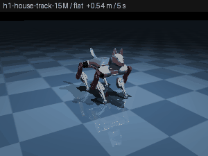 | 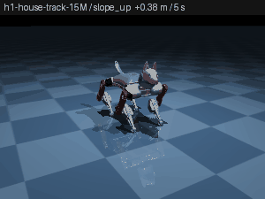 | 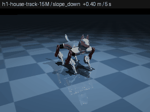 |
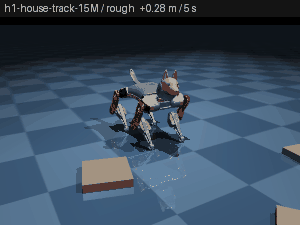 | 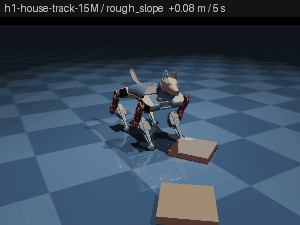 | 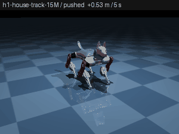 |
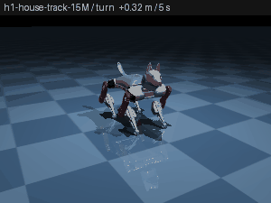 | 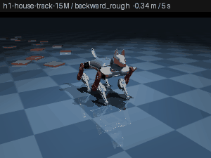 | 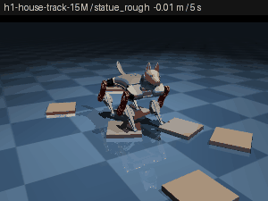 |
| the firmware trot on the same floors | ||
|---|---|---|
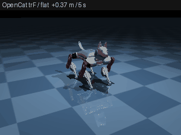 | 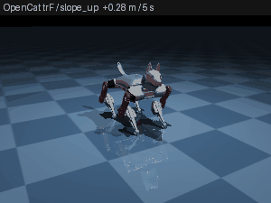 | 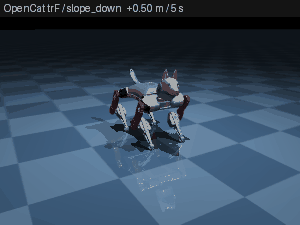 |
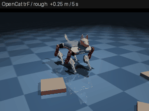 | 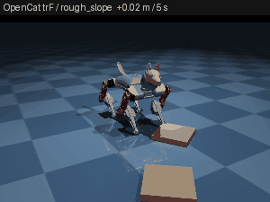 | 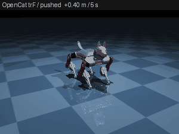 |
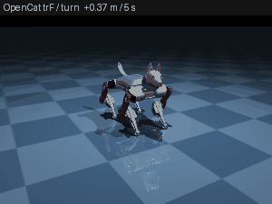 | 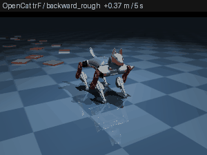 | 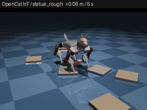 |
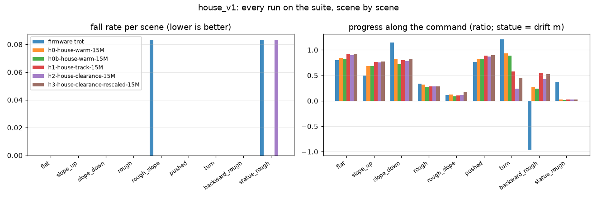
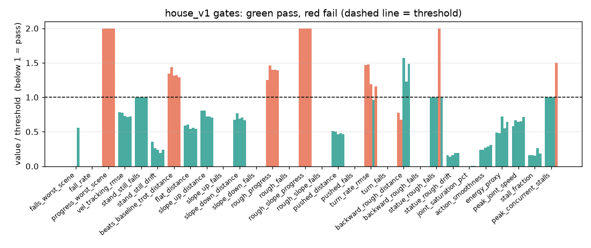
Reading it. The policy is dynamic across the floors: one network, zero falls in 84 episodes over nine grounds, standing still on command on all of them, walking down a slope at the commanded speed where the open-loop trot runs away, backing over cables the firmware cannot reverse over at all, and carrying on through 0.4 m/s shoves. The five failing gates are two problems, not five:
- Rocks. On the 12 mm field it walks 0.34 m and then stalls at an edge, with 0 stumbles and 0 falls — the same shuffle chapter 04 saw, and the mixture did not cure it. The reflection is right that
foot_clearanceis invisible (< 0.2 % of the reward), and h2 shows why no patch could help: at the weight bound (−10) its share is still < 0.2 %. The term was a squared height error in metres (12 mm → 1.4 × 10⁻⁴), a thousand times smaller than the base-height term, which is scaled by 1000 inspec.py. That is a scale defect in the environment, not a weight GLM can fix from the config, so it was fixed (one line inreward_terms, test-pinned: a shuffling swing now costs 0.144 per foot) and h3 retrained on it. The term became visible (4.6 % share), rocks-on-slope improved 0.11 → 0.17 m, but the median swing clearance stayed under 1 mm and the 12 mm field still stops it at 0.35 m; the lifting attempts it does make pinned three servos at once in one episode. Fifteen million steps on the mixture is not enough to change the gait's shape; the rocks need their own rung (level 2 with the rescaled term, then back to the house) or a longer budget. Until then the pooled "beats the trot" ratio (0.85 vs 1.1) is dragged down by the rough scenes. - Turning while walking. h1 turns at rmse 0.30 rad/s against a 0.25 bar; h2 pushed the yaw weight to 4.0 and turned at 0.24 but walked only 0.19 m doing it. The two tracking terms trade against each other at the same sigma; a walk-and-turn command needs its own share of the training commands (today ⅓ of the box has both non-zero) or a separate sigma.
Everything else — friction 0.3–1.2, the 100 g payload, the weak-servo band, 0–4 steps of IMU latency, pushes from any direction — is inside the training distribution and shows up as "nothing happened" in the numbers: the nominal-DR benchmark is the easy case for a policy trained that wide. The DR sweep (dr_sweep=true) is the check that it stays that way and was not run in this wave.
How to reproduce
# on the GPU box, trainer service running
python -m trainer.eval.baselines --suite house_v1 --names opencat_trF opencat_wkF stand
python -m trainer.campaign --in-process --strategy house_v1 --out runs/campaign_house.json
MUJOCO_GL=osmesa python trainer/scripts/render_docs.py --runs-dir runs --out documentation/media/rl-training
python trainer/scripts/render_docs.py --ledger documentation/chapters/02-training-run-ledger.mdOr ask the agent in training mode for "the house policy": bittle_list_tasks returns house_walk, and bittle_train_and_benchmark(task="house_walk") runs one rung and reports all nine scenes.
What is still open
- Rocks. The rescaled
foot_clearanceterm is now visible but 15M steps did not change the shuffle; train the rocks rung again under the new scale (r9/r10's clearance weights were on the old, invisible scale) and warm the house from that. Thepeak_concurrent_stallsfail on h3 says the lifting motion must also stay inside the servo budget. house_v1is uncalibrated by design on the scenes no firmware gait can do; freeze it once a policy passes and the numbers say what is achievable.- Walk-and-turn: give combined commands their own share of the command box, or their own sigma.
dr_sweepon the house champion (payload, friction, latency presets) has not been run.- Self-righting (the real behaviour switch) still needs the
testedjoint tier and its own reset distribution and termination; the supervisor sketch above is not built. - The DR sweep and the multi-command sub-protocol run on the primary (flat) scene only.
- Hardware transfer is unchanged (servo speed measurement, degree-convention translation, chapter 01).
RL walking trainer·Chapter 7
The rocks were phantoms: why "keep training" could not fix rough terrain
The question
The rough_walk policies (r9, r10, the house champion) attempt the 12 mm rocks, never fall, and get stuck: 0.31–0.33 m in 10 s against a 0.45 m gate, swing clearance 1.2 mm against 8 mm. The operator asked whether the agentic harness was missing something or whether the robot just needed more training. This chapter is the audit, the defect it found, and the two training cycles that followed.
What the run files said before any code was read
| fact | where |
|---|---|
| r10's training curve walked 0.89 m at step 0 and 0.90 m at 10M; reward 872 → 884 (flat) | runs/…f10da8/curves.jsonl |
| The benchmark on the same policy read 0.31 m | its rough_v1 report |
| Training level 2 = 20 boxes, heights uniform 3–12 mm; the benchmark = 24 boxes all 12 mm | config.py vs rough_v1.yaml |
The rough_walk task set only terrain.level: 2; foot_clearance and stumble weights defaulted to 0 | tasks.py |
| The reflection only ever said "multiply the weight" | gates.py |
| Dual-sim (GPU vs CPU) was skipped on every terrain protocol | benchmark_cli.py |
So the optimiser was solving something easier than the exam and the harness could not see it. The planned fixes were: match the training terrain to the bar, switch the clearance terms on, make the clearance term one-sided, add a training-time eval on the suite protocol, teach the reflection to name a train/benchmark mismatch, add stuck diagnostics, and run dual-sim on rough once before training anything. The last item found the real defect.
The defect: the GPU never collided with the rocks
Running r10's policy on the pinned rough_v1 field in both engines:
| engine | distance | foot-box contacts | foot bottom vs box top |
|---|---|---|---|
| warp (training engine) | 1.00 m | 0 | 13 mm below |
| CPU MuJoCo (benchmark engine) | 0.29 m | 104 | never below |
mujoco_warp treats a geom whose body is welded to the world as static: its world pose is tiled into data.geom_xpos once at make_data from the unbatched MjModel, where every terrain box is parked at z = −1, and the kinematics kernel returns early for it ever after. Placing the boxes per env through the batched model's body_pos (the fix for the compile-time bounding-box trap in chapter 04) moved only the analytic terrain: the reward, the critic's height scan, the foot clearance and the terrain-relative height all saw rocks; the physics did not. Every GPU rough and house run to date trained on a flat floor with phantom rocks, which is exactly why the curve read 0.9 m while the benchmark read 0.3 m, and why no reward weight could ever help.
Nobody saw it because the only contact-count test ran on the CPU, dual-sim was defined for flat protocols only, and the reflection blamed reward shares.
Fix. BittleGpuEnv._place_static_boxes, called in reset after mjx.forward, writes the per-env box poses into data.geom_xpos / geom_xmat; static geoms keep whatever pose sits in data, so it holds for the episode. pin_terrain(field) pins a protocol field on an unbatched env for dual-sim. Two GPU tests now count foot-box contacts on a 12 mm slab and check the batched data poses per env. After the fix, dual-sim on r10 reads GPU 0.33 m vs CPU 0.31 m (ratio 1.05, was 3.17).
What the harness gained
- Rough dual-sim on every terrain protocol (the GPU replay pins the protocol's field).
- Bar eval. During training, brax's
policy_params_fnrolls the current params out on the task's suite protocol (fixed command, protocol terrain, nominal DR);curves.jsonlcarriesbar_distance_x/bar_distance_p50/bar_fall_ratenext todistance_x, the dashboard plots both against the benchmark p50. A train line far above the benchmark is now visible at 4 minutes, not after the run. - Stuck diagnostics. Per episode
stuck_seconds,stuck_x(where the first stall began) andstuck_limb_steps(was a shank or thigh on the ground during the stall); rollouts carrylimb_contactsper frame so the viewer can show which leg caught an edge. - A reflection that diagnoses instead of multiplying. It names a TRAIN/BENCH MISMATCH with the terrain gap, a switched-OFF term, a heavy term whose gate did not move against the parent (a budget problem), the bar eval against the benchmark (an engine disagreement), where the robot got stuck, and — after r11 — a heavy clearance term with a sub-2 mm swing (dragging, not swinging).
- Diagnose tool and training prompt read
train_vs_benchandterrain_gapfirst; terrain keys are a first-class lever; 30M steps when the terrain or the gait changes, 10M for a weight tweak. - Level 2 covers the bar (24 boxes, 6–15 mm, 0.10 m spacing); rough_walk defaults switch on foot_clearance −2.0, stumble −0.5, feet_air_time 0.3, stall −0.05 at 30M; the clearance term is one-sided (overshooting 12 mm is free).
Two cycles on real rocks
| run | change | gates | distance | swing | what happened |
|---|---|---|---|---|---|
| r10 (before) | phantom rocks | 10/15 | 0.31 m | 1.2 mm | trained on a flat floor |
| r11 | real rocks, task defaults, 30M warm from the slope champion | 10/15 | 0.39 m | 0.66 mm | engines agree (0.97); the policy learned to drag — clearance carried 17 % of the reward but a term that only scores swings is nearly free when no swing happens; feet_air_time 0.12 %, feet_slip 0.02 % |
| r12 | feet_air_time 2.0 (20×), feet_slip −2.0 (40×), 30M warm from r11 | 13/15 | 0.54 m | 0.48 mm | passes distance, progress and beats-the-trot (1.03 → 1.4×); 0 falls, 0 stumbles, 0 stuck episodes; still drags (tracking rmse 0.097, clearance 0.48 mm) |
| r11 on the rough_v1 field | r12 on the rough_v1 field |
|---|---|
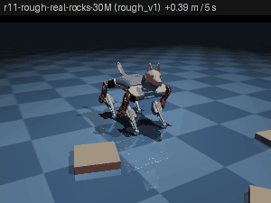 | 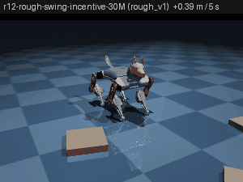 |
The bar eval tracked the benchmark inside both runs (r12: 0.43 m on the GPU protocol at the end of training, 0.54 m on the CPU benchmark, ratio 1.16). The training curve is finally about the exam.
Three cycles by GLM
r11 and r12 were driven by hand to prove the engine fix. The harness changes are for GLM, so the loop was then handed to it: one training-mode session on the deployed agent, "start from r12, call bittle_diagnose_run first and read train_vs_bench, terrain_gap, stuck and the reflection, then up to three cycles, each warm from the best rough run, a written hypothesis, at most three keys".
| cycle | GLM's diagnosis → patch | gates | distance | swing | what moved |
|---|---|---|---|---|---|
| r13 | dragging line: swing terms invisible → feet_air_time 10, feet_slip −10 (both to the bound), tracking_lin_vel 2.0, 30M warm from r12 | 13/15 | 0.60 m | 0.57 mm | +0.06 m, rmse 0.097 → 0.092; still drags with both swing terms at the bound (5.2 % / 2.6 % share) |
| r14 | "terms carry weight → budget and terrain": 40M, boxes 10–18 mm, warm from r13 | 11/15 | 0.43 m | 0.25 mm | regressed: 80 % of episodes stalled, one fall — and GLM found out why: passing task="rough_walk" re-applied the task's stock defaults over the inherited config and silently reset feet_air_time 10 → 0.3 (share 5.2 % → 0.09 %). It saved a research note; the hypothesis was never fairly tested |
| r15 | r13's config with every weight pinned explicitly, 40M warm from r13 | 11/15 | 0.51 m | 0.44 mm | distance holds but two servo-safety gates fail (stall fraction 0.029, 4 concurrent stalls): the extra budget pushed servos into the torque cap |
GLM read the diagnosis correctly at every step: it went to the swing terms first, checked its own first instinct with a dry-run and reversed it, moved to terrain and budget once the terms carried weight, returned to the champion after the regression, and diagnosed the r14 collapse from the config diff rather than from the physics. Its closing recommendation (a stall-aware r13: stall −0.5, action_scale_deg 4, 30M warm from r13) targets r15's new failures without losing the swing terms.
Two harness defects came out of the session, both fixed:
- Same-task warm starts re-applied the task defaults.
_resolvein the trainer service merged the task'sconfig_patchunder the caller's patch whenever a task name was given, so a child on the same task inherited the stock values, not the parent's tuning. Now the task defaults land only when the task CHANGES (the rung); a same-task child keeps its parent's weights. Test: a rough_walk child of a rough_walk parent with feet_air_time 10 keeps 10 and shows no reward diff; a house_walk rung still gets level 4 and the house reward switches. - The reflection would have looped. After r13 the two swing weights sit at their bounds and the swing still measures half a millimetre; the reflection was about to say "raise feet_air_time and feet_slip" again. It now says the weights are at their bounds, no patch can buy the swing, and the gate needs a reward design change or a calibrated threshold, which is an operator decision.
r13 stays the rough_v1 champion.
| r13 (GLM cycle 1) | r15 (GLM cycle 3) |
|---|---|
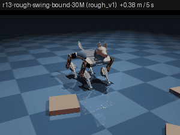 | 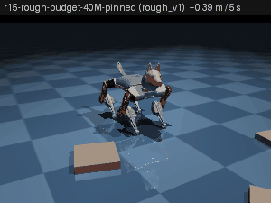 |
What is still open
- Clearance 8 mm is an uncalibrated design target, and the config cannot reach it. Five cycles moved the gait from 0.31 m to 0.60 m without lifting the feet: the policy crosses 12 mm edges by dragging a stiff, fast shuffle, and with feet_air_time and feet_slip at their bounds it still does. Either the gate is wrong for this robot (the firmware trot lifts 0.7 mm and the tested policies never stumble on this field) or the swing reward needs to be a per-swing PEAK bonus rather than a per-step penalty. This is an operator decision; the reflection now says so instead of asking for another weight change.
- Velocity tracking rmse 0.092 vs 0.08: the drag costs speed;
tracking_sigmais the untried lever. - More budget is not free: r15's extra 10M pushed servos into the torque cap (stall gates). The servo-safety fragment caught it, which is what it is for.
- The house champion and every earlier rough run were trained on phantom rocks; the house_v1 rung needs re-running from r13 on real rocks.
RL walking trainer·Chapter 8
Stairs and rubble: two harder floors, and the height reference the stairs broke
The question
The rough_v1 champion (r13, 0.60 m over 12 mm rocks, 13/15 gates) shuffles over edges instead of stepping. The operator asked for training runs that teach it stairs, whether other obstacles would teach it more, and for a rockier field. This chapter is what was built (bittle-agent 7f599c2), what it proved before any training ran, and the first two runs.
Stairs are the same 32 boxes
The terrain XML already carries 32 parked boxes placed per env through body_pos / geom_size (chapter 04) and re-posed in the Warp data at every reset (chapter 06). A staircase is those boxes used differently: terrain.kind: stairs lays full-width step boxes along +x from field_start_m, tops rising by one riser per tread, then a landing, then the mirror flight down. Slots are fixed so the vmapped sampler stays shape-stable: 0–5 the flight up, 6 the landing, 7–12 the flight down; the last step down is the floor, so a flight of n has 2*n* live boxes.
| knob | level 5 default (training) | stairs_v1 bar |
|---|---|---|
stair_steps | 1–4 per flight (a single curb is the easiest draw) | 3 |
stair_rise_m | 6–22 mm | 18 mm (the app's mini-stairs preset) |
stair_tread_m | 60–120 mm | 80 mm |
stair_profile | up_down | up_down |
| landing / width | 0.30 m / 0.60 m | same |
Two geometry decisions carry the physics:
- Every step is buried 20 mm below the plane (
STAIR_BURY), whatever its height, so no tread has a gap a foot could slip under. A 54 mm landing is therefore a 74 mm tall box with its centre 17 mm above the plane. - The parked box grew from 0.15 × 0.15 × 0.02 to 0.15 × 0.30 × 0.10 half-extents. MuJoCo fixes a geom's bounding radius at compile time (chapter 04), so the baked size must be the largest any config can request: six 35 mm risers plus the burial, 0.60 m wide. Only the two
*_terrain.xmlvariants changed;bittle_cpu.xmlis byte-identical and the flat golden fixture still passes.
The down profile spawns the robot on a platform (the landing slot moved behind field_start_m) and descends from there. That needed a spawn rule both engines lacked: the spawn z is lifted by the terrain height under it, and a spawn jitter is refused when it would land on a different level (the old rule refused any non-zero height, which would have refused every platform spawn).
The height reference the stairs broke
base_height, fall termination (FALL_Z_MIN = 20 mm) and body_clearance all measured the torso against the terrain height under the torso point. On a staircase that height jumps a whole riser the instant the torso centre crosses an edge: the reward became a step function, and with a 47 mm standing height any riser over 25 mm would have read as a fall while the front feet were already on the step.
The reference is now terrain.support_height: the mean terrain height under the four feet. Front pair on the step, rear pair below reads half a riser; all four on the landing reads the full height; flat ground reads 0 everywhere, so the flat trainer is bit-identical (golden fixture). One existing test changed its premise for this reason: a 60 mm slab under a 105 mm stance holds one foot pair at a time, so its max reference is half the slab (0.005 m), not the slab (0.010 m).
What was proved before training
| claim | how | result |
|---|---|---|
| step boxes collide on the CPU | trot replay into 3 × 18 mm, foot–step contact count | contacts > 0; the trot is stopped by the first riser (support never rises, 0.4 m) |
| step boxes collide under Warp (the engine that trains) | front feet spawned on step 1, warp contact table | > 50 contacts in 50 steps; support_height reads 9 mm (half a riser) |
the down spawn stands on the platform under Warp | 50 zero-action steps | torso lifted by 54 mm, > 100 platform contacts, no fall, no sink |
| nothing exceeds the baked box | every live half-extent ≤ PARKED_HALF | asserted for every profile |
| level 5 / level 6 train | 300k-step PPO smoke under Warp | reward 17 → 223 (stairs), 16 → 240 (rubble), bar eval running |
| flat is untouched | golden fixture golden_flat_92f2ccb.json | unchanged |
Firmware baselines on the new suites (runs/baselines/*/stairs_v1, rubble_v1): the open-loop trot walks backwards on the stairs protocol (−0.40 m p50) and wkF −0.56 m, so the "beats trot" gates are degenerate and disabled by the existing rule, exactly as designed.
Rubble: the rocks made hard
Level 6 and rubble_v1 answer "add more rocks, make it more complicated" without new geometry: all 32 boxes live, 10–25 mm tall (the bar: 20 mm), 2–8 cm across, 7 cm apart on a 0.5 m strip, any yaw. At 7 cm spacing with 5 cm rocks there is no bare floor to shuffle onto — the swing has to clear an edge almost as tall as half the standing height. Gates are design targets (0.35 m, 12 mm swing clearance) until a policy shows what is achievable.
Which obstacles teach the most (and what is not built)
Ranked by what the 50 Hz blind policy can learn from proprioception alone:
- A single curb (stairs with
stair_steps: [1, 1]) is the primitive of every step edge; level 5 draws it a quarter of the time. Train it before a flight. - Stairs up and down in one field teach two different things: lift the swing (up) and control pitch and vertical speed (down). The
descends_the_flightgate reads the second. - Dense tall rocks (rubble) force clearance where rough_v1 still allowed shuffling round rocks.
- Not built, each a small addition now that the spawn lift exists: gaps (two raised platforms with a trench between), a balance beam (one narrow long box), friction patches per box (ice / rug), stairs on a slope, and a
stairs_sharein the level-4 house mixture once s1 passes. Moving obstacles would need mocap bodies and are not planned.
Runs
All warm-started from r13 (20260910-171039-9a4d1b), the rough_v1 champion, 30M steps each (~13 min at 37k steps/s).
s1: the first stairs run stops at the first riser
| gate | s1 | bar |
|---|---|---|
| fall_rate | 0.00 | ≤ 0.10 |
| climbs_the_flight | 0.009 m | ≥ 0.054 m |
| descends_the_flight | 0.000 m | ≥ 0.054 m |
| forward_distance_p50 | 0.193 m | ≥ 0.80 m |
| progress_ratio | 0.161 | ≥ 0.50 |
| stumble_rate | 0.00 | ≤ 0.30 |
| body_clearance | 37 mm | ≥ 10 mm |
| servo safety (6 gates) | all pass (0.27 W, 3.0 rad/s p99.5, 0.0035 stall) | — |
11/15. Read the per-episode numbers rather than the medians: stuck_x is 0.20–0.23 m in 19 of 20 episodes, and the first riser stands at 0.15 m plus up to 40 mm of spawn jitter. The climb column is 0.009 m in 13 episodes and 0.018 m in 7 — that is one foot pair on step 1 with the rear pair still on the floor (the support height is the mean under the four feet), and in the 0.018 cases all four feet made it up one step. The robot then stands there for 6.5 s of a 10 s episode.
So the policy is not falling off the stairs or scraping its belly; it simply cannot lift its body over an 18 mm edge. That is the same 0.5 mm swing clearance chapter 06 ends on, met by a taller obstacle. Two things to change, and s2 changes both: the first ask is too big (18 mm against a 47 mm standing height), and the task's config_patch reset the parent's swing weights from their ±10 bound to 2 / −2 when the task changed (the _resolve rule from chapter 06 only protects a same-task warm start).
b1: cancelled — the dense field overflowed the contact budget
The first rubble run logged broadphase overflow - please increase nconmax to 52 on every step it reported (4315 lines). The per-world contact budget was a flat 48 for any boxed terrain; 32 rocks at 7 cm spacing, up to 8 cm across, need more. Contacts that do not fit are dropped, which is the phantom-rock failure of chapter 06 arriving by a different route — so the run was cancelled rather than allowed to finish and report a number.
gpu_env.contact_budget_per_world now returns 96 for a dense field (more than 24 boxes, or spacing under 9 cm) and for stairs (full-width boxes can sit under all four legs at once), 48 for the rough_v1 class, 16 for flat ground; njmax follows. The test drives 128 worlds for 150 random-action steps on levels 5 and 6 and fails on any overflow line in the captured output. s1's log has none, so its benchmark above stands.
The lesson generalises past this repo: a solver budget sized for one workload silently degrades physics on a denser one, and it announces itself only in stderr that nothing was reading. Any config knob that scales with obstacle count needs a test at the densest setting the config allows.
s2 (curbs) and b1b (rubble, clean physics): the same verdict from both floors
| measure | s1 (18 mm flight) | s2 (trained on 6–14 mm curbs) | b1b (20 mm rubble) |
|---|---|---|---|
| gates | 11/15 | 11/15 | 11/15 |
| highest level reached | 0.009 m | 0.032 m | — |
| episodes reaching the top | 0/20 | 2/20 | — |
| distance | 0.193 m | 0.275 m | 0.079 m |
| swing clearance p50 | 0.11 mm | 1.30 mm | 0.22 mm |
| stalled seconds per episode | 6.5 s | 0.0 s | 8.8 s |
| fall rate | 0.00 | 0.10 | 0.00 |
b1b reran the rubble with the corrected contact budget and zero overflow lines over the whole 30M steps, so its number is honest: 0.08 m of a 2.2 m field, stalled for 8.8 s of every 10 s episode, belly 38 mm clear, nothing stumbling — it simply stands there. s2 is the one real gain: training on curbs teaches it to get one to three of the three steps, and it never stalls. It still never descends, and its fall rate rose to 0.10, exactly the gate limit.
Both floors give the same verdict, and it is not about the obstacles. The rubble reflection states the mechanism exactly: foot_clearance already carries 29.9 % of the reward with feet_air_time and feet_slip pinned at their ±10 bounds, and the swing still does not come.
The swing terms cannot buy the first swing
Every incentive to lift a foot is conditional on a lift already happening:
| term | when it pays | what a dragging gait collects |
|---|---|---|
foot_clearance | multiplied by a swing mask (airborne and foot moving) | nothing — the mask is 0 |
feet_air_time | at first_contact, proportional to time airborne | nothing — a foot that never left never lands |
feet_slip | penalises sliding while in contact | this one does fire, and it favours standing still |
That is a bootstrapping failure, not a tuning gap: the terms meant to teach the swing are all silent until the swing exists, so no value of them can produce the first one. It also explains why chapter 06's clearance rescale (×1000) and the ±10 bounds bought only 0.5 mm.
Before adding anything, check the robot can physically do it. Sweeping one leg's shoulder and knee over the policy envelope with the body at stand height:
| measurement | result |
|---|---|
| kinematic ceiling of the foot above the plane | 116 mm |
| reached through the real actuators (kp 10, ±0.25 N·m) in 0.5 s | 74 mm |
The 12 mm target is not a physical limit — six times the requirement is available in half a second. The gradient was missing, not the capability.
stance_timeout
A term that pays before a swing exists: for each foot, the seconds it has been planted beyond STANCE_MAX_S (0.3 s, one and a half firmware-trot stride periods) while the robot is commanded to move. It grows while the foot drags and stops the instant it lifts. It is exactly 0 for a gait that already swings, and exactly 0 under a zero command, so the statue task is untouched. Default weight 0.0, so every existing config is unchanged and the flat golden fixture still passes.
The counted overdue time is capped at 0.5 s per foot, and that cap is load-bearing. weighted_reward clips the weighted total at 0, so a penalty large enough to sink the sum yields a flat zero reward with no gradient anywhere — strictly worse than no term. Uncapped, a foot planted 9 s of a 10 s episode scores 8.7 by itself and 34.8 over four feet, burying every positive term at any usable weight. Capped, the whole term is at most 2.0 per step, so −0.1 costs about a fifth of a typical step's reward.
The general trap: a reward term gated on the behaviour it is meant to teach cannot teach it, at any weight. When a term's share is large and the behaviour is still absent, ask whether the term is reachable from the current policy before touching its weight — and measure the mechanical ceiling with an oracle before assuming the policy is at fault.
What the term actually did: five runs, one variable at a time
The first two attempts were not clean tests and are recorded as such. s3 raised the terrain rung and switched the term on, so its regression (0.11 m against s2's 0.275 m) cannot be attributed to either; setting it up as a controlled test was an error. s3 and b2 were also dosed far too low — the training curve shows stance_timeout collecting −10.7 per episode against a total reward of 453, a 2.4 % share, and the trainer's own rule is that anything under ~2 % is invisible to the optimiser. b2, a genuinely single-variable run at −0.1, changed nothing measurable:
| rubble arm | distance | swing clearance | stalled / episode | falls | gates |
|---|---|---|---|---|---|
| b1b — no term | 0.079 m | 0.222 mm | 8.8 s | 0.00 | 11/15 |
| b2 — −0.1 (2.7 % share) | 0.088 m | 0.181 mm | 7.7 s | 0.00 | 11/15 |
| b3 — −0.5 | 0.188 m | 0.743 mm | 0.0 s | 0.25 | 10/15 |
At −0.5 the term reaches a 9 % share and the behaviour changes: 2.4× the distance, 3.3× the swing clearance, and the stalls disappear entirely — 8.8 s of standing still per episode becomes 0.0 s. The energy proxy rises from 0.16 W to 1.18 W, which is the honest signature of a robot that has started doing work instead of standing on a rock. It now also falls in a quarter of episodes, which costs it a gate: having stopped freezing, it meets the 20 mm rubble at speed and goes over.
On stairs, with s2's terrain held exactly fixed and only the weight changed:
| stairs arm | distance | climb p50 | worst episode's climb | reached the top | falls |
|---|---|---|---|---|---|
| s2 — no term | 0.275 m | 0.032 m | 0.004 m | 2/20 | 0.10 |
| s4 — −0.5 | 0.292 m | 0.034 m | 0.027 m | 4/20 | 0.00 |
The medians barely move; the floor rises sharply. Every episode now clears at least a step and a half instead of some barely leaving the ground, the top is reached twice as often, and the falls are gone. stance_timeout buys consistency and safety on stairs, and buys motion itself on rubble.
The dose is the experiment. The same term at −0.1 and at −0.5 is not a weak and a strong version of one result — it is a null and a positive. Read a term's reward share from the training curve before concluding anything from a run that carries it.
Nothing was paying for the climb
slope_progress rewards height gained by projecting velocity onto the uphill direction, which it derives from the gravity tilt. A staircase is level ground at several heights: its gravity points straight down, uphill_xy is exactly 0, and the term is identically 0 on every stairs protocol. The task asks the robot to climb and no term in the reward paid for climbing.
climb_progress is the missing twin: the rate at which the support surface under the four feet rises, positive only (falling off the flight must never pay), only while commanded to move, and expressed per second so 25 Hz and 50 Hz agree. It is exactly 0 on flat ground and on a slope, where the support height never changes, and its default weight is 0.
Running
| run | id | change from its parent |
|---|---|---|
| s5-stairs-climb-progress-30M | queued | warm from s4; climb_progress 5.0 and nothing else |
Open
- b3 trades stalling for falling (0.00 → 0.25 fall rate on 20 mm rubble). That is the next rung's problem, not a reason to back the weight off: a robot that moves and sometimes falls is a better starting point than one that never moves. Raise
orientation/base_heightfrom b3. - stairs_v1 and rubble_v1 remain uncalibrated 0.1.0;
climbs_the_flight/descends_the_flightare course geometry, not measured targets. - Nothing yet descends a flight. Going down is a different problem from going up (pitch and vertical speed rather than clearance) and likely needs its own rung with the
downprofile. climb_progressat 5.0 is reasoned, not measured: one 18 mm riser crossed in a control step scores 0.9 m/s, so 5.0 makes a real climb worth a few steps of tracking. Read its share from the curve.- A task change re-applies the task's
config_patchover the parent (s1 lost r13's ±10 swing weights). The same-task guard from chapter 06 does not cover a cross-task warm start. - Restarting the trainer service kills any job in flight; s2's benchmark was orphaned that way and its state restored by hand from a complete report. A new reward field needs a restart, so wait for
/healthto show no running or queued jobs first. - The NAS container is not redeployed: another session holds uncommitted GPU-lock changes in the primary checkout and the deploy guard refuses an unidentifiable tree.